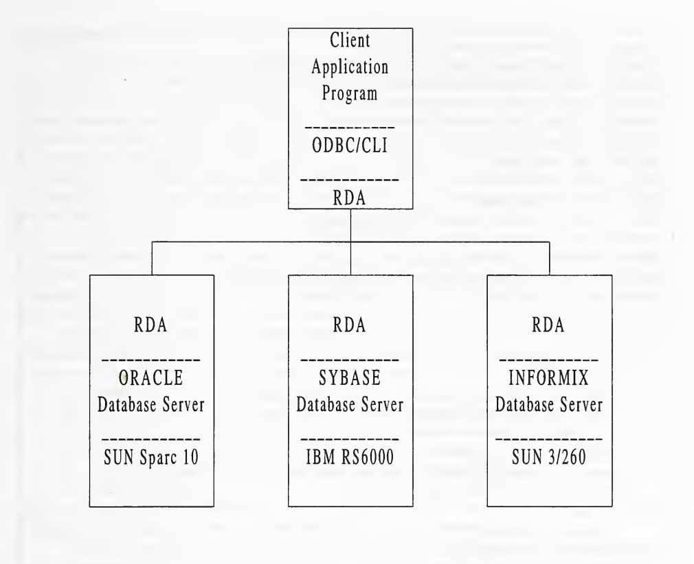
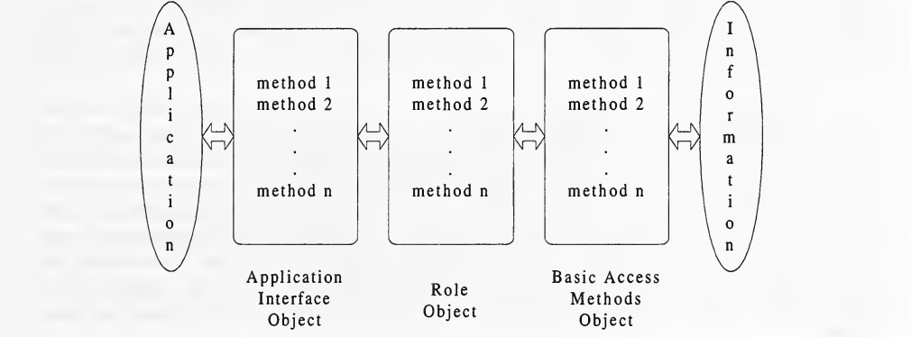
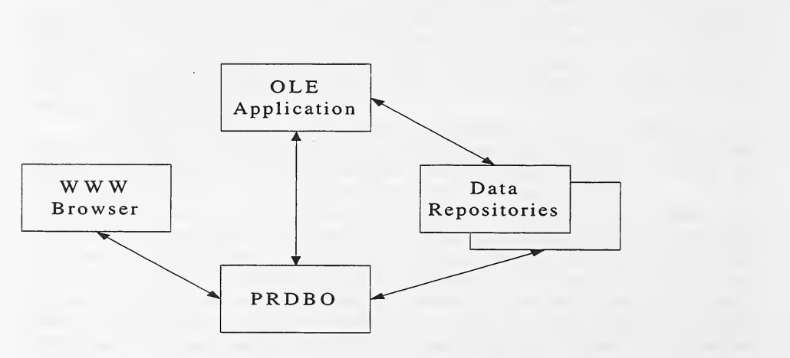
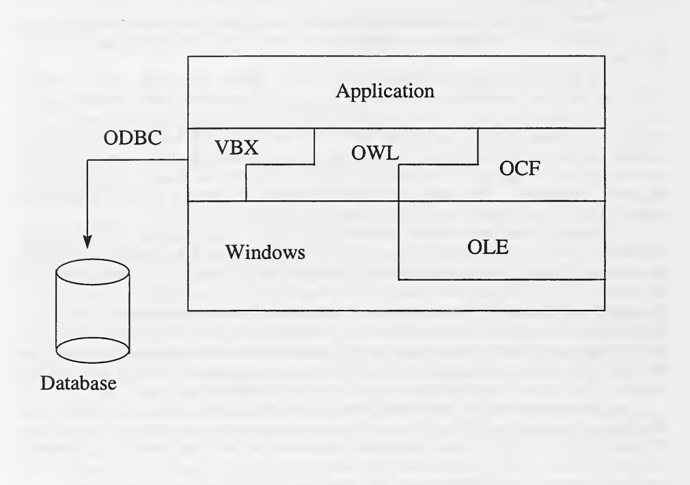

NIST IR 5820 日本語訳
英語タイトル : Distributed Communication Methods and Role-Based Access Control for Use in Health Care Applications日本語タイトル : 医療アプリケーションで使用する分散通信方式とロールベースアクセス制御
公開日 : 1996-04-01
原文URL : https://csrc.nist.gov/pubs/ir/5820/final
翻訳編集 : 自動生成（有志による非公式の日本語訳）, 原文取得日 : 2026-11-16, 訳文 : 345 / 358 ブロック
[要約] NIST IR 5820 は、医療分野のソフトウェアで使う分散通信方式の適合性を調べた結果と、ロールベースアクセス制御（RBAC）の探究結果を記述する報告書です。医療情報は多数の拠点に分散しており、それらを統合する統一的な仕組みが課題であるという問題意識のもと、CORBA、OLE、RPC、SQL/RDA、PII（特にソケット）の 5 方式を、開発者にとっての使いやすさ、得意とするアプリケーションの種類、セキュリティ機能、利用するプロトコル、転送の性能の観点から比較しています。RBAC については、強制アクセス制御より柔軟で、単純なアクセス制御リストより使いやすいセキュリティ機構として扱い、各利用者を 1 つ以上のロールに割り当てる考え方を説明しています。さらに、患者記録データベースを実装する実証アプリケーションを構築し、各方式の使い方と結果を述べています。結論では、各方式がそれぞれ異なる目的に有効であったと報告しています。
NISTIR 5820
NISTIR 5820
Distributed Communication Methods and Role-Based Access Control for Use in Health Care Applications
医療アプリケーションで使用する分散通信方式とロールベースアクセス制御
Joseph Poole
John Barkley
Kevin Brady
Anthony Cincotta
Wayne Salamon
Joseph Poole
John Barkley
Kevin Brady
Anthony Cincotta
Wayne Salamon
U.S. DEPARTMENT OF COMMERCE
Technology Administration
National Institute of Standards and Technology
Gaithersburg, MD 20899
米国商務省
技術管理局（Technology Administration）
国立標準技術研究所（National Institute of Standards and Technology）
Gaithersburg, MD 20899
NISTIR 5820
NISTIR 5820
Distributed Communication Methods and Role-Based Access Control for Use in Health Care Applications
医療アプリケーションで使用する分散通信方式とロールベースアクセス制御
Joseph Poole
John Barkley
Kevin Brady
Anthony Cincotta
Wayne Salamon
Joseph Poole
John Barkley
Kevin Brady
Anthony Cincotta
Wayne Salamon
U.S. DEPARTMENT OF COMMERCE
Technology Administration
National Institute of Standards and Technology
Gaithersburg, MD 20899
米国商務省
技術管理局（Technology Administration）
国立標準技術研究所（National Institute of Standards and Technology）
Gaithersburg, MD 20899
April 1996
1996年4月
U.S. DEPARTMENT OF COMMERCE
Michael Kantor, Secretary
TECHNOLOGY ADMINISTRATION
Mary L. Good, Under Secretary for Technology
NATIONAL INSTITUTE OF STANDARDS AND TECHNOLOGY
Arati Prabhakar, Director
米国商務省
Michael Kantor、長官
技術管理局
Mary L. Good、技術担当次官
国立標準技術研究所
Arati Prabhakar、所長
Abstract
要旨
The use of software in the health care industry is becoming of increasing importance. One of the major roadblocks to efficient health care is the fact that important information is distributed across many sites. These sites can be located across a significant area. The problem is to provide a uniform mechanism to integrate this information. This paper documents the results of an investigation into the suitability of several different distributed access mechanisms. Five methods were examined: the Common Object Request Broker (CORBA), Object Linking and Embedding (OLE), remote procedure call (RPC), remote database access (SQL/RDA) and Protocol Independent Interfaces (PII, we specifically examined sockets). These mechanisms were compared with regard for use in health care applications. In particular, the following capabilities were compared:
医療業界では、ソフトウェアの利用がますます重要になっています。効率的な医療を妨げる大きな障害の一つは、重要な情報が多数の拠点に分散していることです。これらの拠点は、広い地域にわたって点在している場合があります。課題は、この情報を統合するための統一的な仕組みを提供することです。本論文は、複数の異なる分散アクセス機構の適合性について調査した結果を記録したものです。検討した方式は 5 つで、Common Object Request Broker（CORBA）、Object Linking and Embedding（OLE）、リモートプロシージャコール（RPC）、リモートデータベースアクセス（SQL/RDA）、およびプロトコル非依存インタフェース（PII。具体的にはソケットを検討しました）です。これらの機構を、医療アプリケーションでの使用という観点から比較しました。特に、次の能力を比較しました。
•Ease of use by the developer
•開発者にとっての使いやすさ
•Class of applications for which the technology is particularly effective in developing
•その技術が特に効果的に開発できるアプリケーションの種類
•Security capabilities
•セキュリティ能力
•Protocols utilized
•利用されるプロトコル
•Performance of the transport mechanism.
•トランスポート機構の性能。
A second goal was to explore the use of role-based access control (RBAC). RBAC is a security mechanism that is more flexible than Mandatory Access Control, but easier to use than just plain access control lists. Every user is assigned to one or more roles. Each role can perform some operations but not others.
第 2 の目標は、ロールベースアクセス制御（RBAC）の利用を探ることでした。RBAC は、強制アクセス制御よりも柔軟であり、単なるアクセス制御リストよりも使いやすいセキュリティ機構です。すべてのユーザーは 1 つ以上のロールに割り当てられます。各ロールは、一部の操作を実行できますが、それ以外の操作は実行できません。
A demonstration application was constructed that used the distributed communication methods to implement a patient record database. This report discusses how these mechanisms were used in the demonstration project and the results found. Not unsurprisingly, we discovered that each of the mechanisms were effective for different purposes. These findings are discussed in detail in this report. One component of the demonstration project also implemented role-based access control and is detailed in this report.
分散通信方式を使って患者記録データベースを実装するデモンストレーションアプリケーションを構築しました。本報告書では、デモンストレーションプロジェクトでこれらの機構がどのように使われたか、および得られた結果を論じます。予想どおり、各機構はそれぞれ異なる目的に対して有効であることがわかりました。これらの知見を本報告書で詳しく論じます。デモンストレーションプロジェクトの構成要素の一つはロールベースアクセス制御も実装しており、本報告書で詳しく説明します。
Keywords : access control, CORBA, distributed, health care, OLE, PII, RBAC, role-based, RPC, security, SQL/RDA, transport
キーワード: アクセス制御, CORBA, 分散, 医療, OLE, PII, RBAC, ロールベース, RPC, セキュリティ, SQL/RDA, トランスポート
Trademarks
商標
Ada is a registered trademark of the U.S. Government (Ada Joint Program Office). Microsoft and Windows are registered trademarks of Microsoft Corporation. Microsoft Visual Basic is a trademark of Microsoft Corporation. Borland is a registered trademark of Borland International, Inc. Unix is a registered trademark of Novell, Inc.
Ada は米国政府（Ada Joint Program Office）の登録商標です。Microsoft および Windows は Microsoft Corporation の登録商標です。Microsoft Visual Basic は Microsoft Corporation の商標です。Borland は Borland International, Inc. の登録商標です。Unix は Novell, Inc. の登録商標です。
Certain commercial products are identified in this report. Such identification does not imply recommendation or endorsement by the National Institute of Standards and Technology, nor does it imply that the product, publication or service identified is necessarily the best available for the purpose.
本報告書では、特定の市販製品を明示しています。こうした明示は、国立標準技術研究所による推奨や是認を意味するものではなく、明示された製品、刊行物、サービスが目的に対して必ずしも最良であることを意味するものでもありません。
Acronyms
略語
API - Application Program Interface
BOA - Basic Object Adapter
CDR - Common Data Representation
COM - Component/Common Object Model
CORBA - Common Object Request Broker
DAC - Discretionary Access Control
DCE - Distributed Computing Environment
GUID - Globally Unique Identifier
HTML - Hyper-text Markup Language
IDL - Interface Definition Language
IIOP - Internet Inter-ORB Bridges
MAC - Mandatory Access Control
NCS - Network Computing System
NDR - Network Data Representation
NIS - Network Information Service
OA - Object Adapter
ODBC - Open Database Connectivity
OLE - Object Linking and Embedding
ONC - Open Network Computing
ORB - Object Request Broker
OSF - Open Software Foundation
PII - Portable Independent Interfaces
POSIX - Portable Operating System Interface for Computer Environments
RBAC - Role-based Access Control
RDA - Remote Database Access
RPC - Remote Procedure Call
RPCL - Remote Procedure Call Language
TCP/IP - Transmission and Control Protocol / Internet Protocol
XDR - External Data Representation
API - アプリケーションプログラムインタフェース
BOA - 基本オブジェクトアダプタ
CDR - 共通データ表現
COM - コンポーネント／共通オブジェクトモデル
CORBA - Common Object Request Broker
DAC - 任意アクセス制御
DCE - 分散コンピューティング環境
GUID - グローバル一意識別子
HTML - ハイパーテキストマークアップ言語
IDL - インタフェース定義言語
IIOP - Internet Inter-ORB Bridges
MAC - 強制アクセス制御
NCS - Network Computing System
NDR - ネットワークデータ表現
NIS - ネットワーク情報サービス
OA - オブジェクトアダプタ
ODBC - Open Database Connectivity
OLE - Object Linking and Embedding
ONC - Open Network Computing
ORB - オブジェクトリクエストブローカ
OSF - Open Software Foundation
PII - Portable Independent Interfaces
POSIX - コンピュータ環境向けポータブルオペレーティングシステムインタフェース
RBAC - ロールベースアクセス制御
RDA - リモートデータベースアクセス
RPC - リモートプロシージャコール
RPCL - リモートプロシージャコール言語
TCP/IP - 伝送制御プロトコル／インターネットプロトコル
XDR - 外部データ表現
Table of Contents
目次
Table of Figures
図の一覧
•Figure 1. CORBA Block Diagram — 9
•図 1. CORBA のブロック図 — 9
•Figure 2. Components of OLE and COM — 13
•図 2. OLE と COM の構成要素 — 13
•Figure 3. Illustration of Multi-vendor Database Environment — 17
•図 3. マルチベンダーのデータベース環境の例 — 17
•Figure 4. SQL/RDA using an API — 18
•図 4. API を用いた SQL/RDA — 18
•Figure 5. Source Code for Writing to a Socket — 20
•図 5. ソケットへの書き込みのソースコード — 20
•Figure 6. RPC Function Call over a Network — 22
•図 6. ネットワークを介した RPC の関数呼び出し — 22
•Figure 7. Implementing RBAC with Layered Objects — 25
•図 7. 階層化オブジェクトによる RBAC の実装 — 25
•Figure 8. Source Code for RBAC Example — 28
•図 8. RBAC の例のソースコード — 28
•Figure 9. Patient Record Database Object Entity Relationships — 32
•図 9. 患者記録データベースのオブジェクトのエンティティ関連 — 32
•Figure 10. Block Diagram of Distributed Health Care Project — 32
•図 10. 分散医療プロジェクトのブロック図 — 32
•Figure 11. PC Demonstration Application Block Diagram — 38
•図 11. PC デモンストレーションアプリケーションのブロック図 — 38
•Figure 12. Source Code to link OLE COM Object — 39
•図 12. OLE COM オブジェクトをリンクするソースコード — 39
1. Introduction
1. 序論
Software is becoming of increasing importance in many industries, including the health care industry. An important characteristic of health care applications is that the data can be distributed across a wide area. Creating a comprehensive patient record can involve collecting information from many widely dispersed host machines. There are concerns about how fast large medical images can be transferred. There are also issues of how secure the data is when being transferred over a private network.
ソフトウェアは、医療業界を含む多くの業界で、ますます重要になっています。医療アプリケーションの重要な特徴は、データが広い地域に分散している可能性があることです。包括的な患者記録を作成するには、広く散在する多数のホストマシンから情報を収集することが必要になる場合があります。大きな医用画像をどれだけ速く転送できるかについての懸念があります。また、専用ネットワークで転送される間のデータの安全性についての問題もあります。
The purpose of this report is to examine different transport mechanisms and to evaluate their effectiveness in performing health care related tasks. We selected five different transport mechanisms to examine: CORBA (Common Object Request Broker), OLE (Object Linking and Embedding), PII (Portable Independent Interfaces, specifically sockets), SQL/RDA (Remote Database Access) and RPC (Remote Procedure Call). Each of these were evaluated using five criteria:
本報告書の目的は、さまざまなトランスポート機構を調べ、医療関連のタスクを実行するうえでの有効性を評価することです。調査対象として 5 つのトランスポート機構を選びました。CORBA（Common Object Request Broker）、OLE（Object Linking and Embedding）、PII（Portable Independent Interfaces。具体的にはソケット）、SQL/RDA（Remote Database Access）、および RPC（Remote Procedure Call）です。これらをそれぞれ、次の 5 つの基準で評価します。
•How easy is it to use the product to develop applications?
•その製品を使ってアプリケーションを開発するのはどれだけ容易か。
•What is the class of applications that the product is best suited to develop?
•その製品が最も適しているのは、どのような種類のアプリケーションの開発か。
•What are the security capabilities of the product?
•その製品のセキュリティ能力は何か。
•What network transport protocols can be utilized?
•どのようなネットワークトランスポートプロトコルを利用できますか。
•What is the performance of the transport mechanism?
•そのトランスポート機構の性能はどうか。
A demonstration project was created in conjunction with this report. The goal of the demonstration project was to give an example of how the various communication technologies can be used in an actual application. We built two viewers of patient record data. One viewer was a POSIX (Portable Operating System Interface for Computer Environments, see [IEEE1003.1c] and others) client that used a Hyper Text Markup Language (HTML) browser to examine patient data. The HTML browser found its data through a CORBA interface. The CORBA interface determined where the data of interest was located and queried the remote database using SQL/RDA.
本報告書と併せて、デモンストレーションプロジェクトを作成しました。デモンストレーションプロジェクトの目標は、さまざまな通信技術を実際のアプリケーションでどのように使えるかの例を示すことでした。患者記録データのビューアを 2 つ構築しました。1 つ目のビューアは POSIX（コンピュータ環境向けポータブルオペレーティングシステムインタフェース。[IEEE1003.1c] などを参照）のクライアントで、ハイパーテキストマークアップ言語（HTML）ブラウザを使って患者データを調べるものでした。HTML ブラウザは、CORBA インタフェースを通じてデータを見つけました。CORBA インタフェースは、目的のデータがどこにあるかを判定し、SQL/RDA を使ってリモートのデータベースに問い合わせました。
The second viewer used OLE. Since OLE is not yet a distributed mechanism, this viewer had a different function. The viewer was used to contain patient data that has already been collected from other sites into a patient report. Additional documents created by other applications could also be added to the patient report. For example, an article concerning new treatment taken from a medical journal could be incorporated. The viewer also had limited database querying ability. Local databases which support the ODBC (Open Database Connectivity) protocol could be queried. This viewer was more limited than the previous viewer in the sense that it had to know the exact host on which the data resided.
2 つ目のビューアは OLE を使いました。OLE はまだ分散機構ではないため、このビューアは異なる機能を持ちました。このビューアは、他の拠点からすでに収集された患者データを患者報告書にまとめて保持するために使われました。他のアプリケーションで作成した追加の文書も、患者報告書に加えることができました。たとえば、医学雑誌から取った新しい治療法に関する記事を取り込めます。このビューアには、限定的なデータベース問い合わせ機能もありました。ODBC（Open Database Connectivity）プロトコルをサポートするローカルのデータベースに問い合わせることができました。このビューアは、データが存在する正確なホストを知っている必要があるという点で、前のビューアよりも制約がありました。
In this section of the report we have presented a general project overview. The next section will review each of the distributed communication methods and apply the evaluation criteria to each. After that is the section presenting a technical overview of role-based access control. The following section covers the demonstration project. Finally, we will present our conclusions.
報告書のこの節では、プロジェクトの全体像を示しました。次の節では、各分散通信方式を概観し、それぞれに評価基準を適用します。その後の節では、ロールベースアクセス制御の技術概要を示します。続く節ではデモンストレーションプロジェクトを扱います。最後に結論を示します。
2. Technical Overview of Transport Mechanisms
2. トランスポート機構の技術概要
2.1 CORBA
2.1 CORBA
CORBA, the Common Object Request Broker, provides integration of object systems within a client/server framework. Clients issue requests for services on objects and the server performs the requested service. The CORBA server is termed the "object implementation". The clients are isolated from the object implementation through commonly defined interfaces which specify the makeup and operations associated with each object and how the operations on the object are provided. Clients seamlessly access the object implementation wherever that object implementation may reside, i.e., in a library on the same host as the client, in another process on the same host as the client, or on a different host from the client where the two hosts are connected by a network.
CORBA（Common Object Request Broker）は、クライアント／サーバのフレームワークの中で、オブジェクトシステムの統合を提供します。クライアントはオブジェクトに対するサービスを要求し、サーバが要求されたサービスを実行します。CORBA のサーバは「オブジェクト実装」と呼ばれます。クライアントは、各オブジェクトの構成と関連する操作、およびその操作の提供方法を規定する共通に定義されたインタフェースによって、オブジェクト実装から隔離されています。クライアントは、オブジェクト実装がどこにあっても、つまりクライアントと同じホスト上のライブラリにあっても、クライアントと同じホスト上の別のプロセスにあっても、ネットワークで接続された別のホスト上にあっても、シームレスにオブジェクト実装にアクセスします。
IDL is the language used for defining interfaces. IDL is programming language independent. When IDL is compiled, the output is programming language source code. Using IDL, the programmer describes the interfaces to the objects. The IDL compiler then takes the descriptions and outputs language in the target language. This code is a skeleton which the programmer then fills in. CORBA provides the Dynamic Invocation Interface which allows applications to generate requests at run-time. Target Language bindings are provided for C, C++, Ada and SmallTalk. The interfaces and methods of the IDL are mapped into programming constructs of the target language. For example, when IDL is mapped into C++, interfaces are mapped into classes and methods are mapped into functions, which perform the services of the interface. IDL does not specify how an interface is implemented. IDL does provide detailed information about the operations permitted on each object, the arguments expected, what is returned, and what happens when errors occur.
IDL は、インタフェースを定義するための言語です。IDL はプログラミング言語に依存しません。IDL をコンパイルすると、出力はプログラミング言語のソースコードになります。プログラマは IDL を使ってオブジェクトのインタフェースを記述します。IDL コンパイラはその記述を受け取り、対象言語のコードを出力します。このコードはスケルトンであり、プログラマがそれを埋めていきます。CORBA は、アプリケーションが実行時に要求を生成できる動的起動インタフェースを提供します。対象言語のバインディングは、C、C++、Ada、SmallTalk について提供されています。IDL のインタフェースとメソッドは、対象言語のプログラミング構造に対応付けられます。たとえば、IDL を C++ に対応付けると、インタフェースはクラスに、メソッドはインタフェースのサービスを実行する関数に対応付けられます。IDL は、インタフェースをどのように実装するかを規定しません。IDL は、各オブジェクトに許される操作、期待される引数、返される値、およびエラー発生時に起こることについての詳細な情報を提供します。
Running an IDL script containing an interface definition through an IDL compiler generates the code for the client stubs and the implementation skeleton. Every possible operation on an object defined in the IDL generates a client stub. The client stubs bind the client to the object, i.e. translate between local and standard data representations, and marshal the method call parameters to and from the object. The implementation skeleton marshals the method call parameters to and from the client. The CORBA components and flow of information is shown in figure 1.
インタフェース定義を含む IDL スクリプトを IDL コンパイラに通すと、クライアントスタブと実装スケルトンのコードが生成されます。IDL で定義されたオブジェクトに対する可能なすべての操作ごとに、クライアントスタブが生成されます。クライアントスタブは、クライアントをオブジェクトに結び付けます。すなわち、ローカルのデータ表現と標準のデータ表現との間で変換し、メソッド呼び出しのパラメータをオブジェクトとの間でマーシャリングします。実装スケルトンは、メソッド呼び出しのパラメータをクライアントとの間でマーシャリングします。CORBA の構成要素と情報の流れを図 1 に示します。
CORBA includes
CORBA には次のものが含まれます:
1.an object model;
1.オブジェクトモデル。
2.the Object Request Broker (ORB);
2.オブジェクトリクエストブローカ（ORB）。
3.an object-oriented Interface Definition Language (IDL);
3.オブジェクト指向のインタフェース定義言語（IDL）。
4.language mappings to the IDL (e.g., C , C++, Smalltalk, Ada);
4.IDL への言語マッピング（たとえば C、C++、Smalltalk、Ada）。
5.the mechanisms necessary for interoperability between clients and object implementations; and
5.クライアントとオブジェクト実装の間の相互運用性に必要な機構。
6.standard services whose interfaces are defined in CORBA IDL.
6.インタフェースが CORBA IDL で定義された標準サービス。

CORBA の構成要素を示すブロック図です。上段に「Client」と「Client Implementation」の箱があり、そこから下段の「Client Stubs」「ORB Interface」「Implementation Skeletons」「Object Adaptor」の 4 つの箱へ線が下りています。4 つの箱はすべて最下段の「ORB Core」の上に載っています。クライアントはクライアントスタブと ORB インターフェースに、実装は ORB インターフェース・実装スケルトン・オブジェクトアダプターにつながっています。
Figure 1. CORBA Block Diagram
図 1. CORBA のブロック図
These standard services are used by clients and object implementations when interacting with the CORBA environment. Examples of standard services include the Interface Repository which permits applications to get information about objects and their methods and Dynamic Invocation which permits applications to make requests to object implementations without having to be recompiled.
これらの標準サービスは、クライアントやオブジェクト実装が CORBA 環境とやり取りするときに使われます。標準サービスの例として、アプリケーションがオブジェクトとそのメソッドに関する情報を取得できるインタフェースリポジトリと、アプリケーションが再コンパイルせずにオブジェクト実装へ要求を出せる動的起動があります。
CORBA is specified in three documents available from the Object Management Group (OMG): The Common Object Request Broker: Architecture and Specification (CORBA) [CORBASPEC], CORBAservices, and CORBAfacilities. The CORBA specification includes the object model, the semantics of the ORB, the IDL, the language mappings, interoperability, and basic object services. The CORBAservices specification includes additional services useful for realizing and maintaining objects within a distributed computing environment. These services include naming, events, lifecycle, persistence, transactions, concurrency, externalization, and relationships. The CORBAfacilities specification includes both higher level services applicable across all application domains and higher level services targeted to specific application domains, such as manufacturing or healthcare.
CORBA は、Object Management Group（OMG）から入手できる 3 つの文書、The Common Object Request Broker: Architecture and Specification（CORBA）[CORBASPEC]、CORBAservices、および CORBAfacilities で規定されています。CORBA 仕様には、オブジェクトモデル、ORB の意味規則、IDL、言語マッピング、相互運用性、および基本オブジェクトサービスが含まれます。CORBAservices 仕様には、分散コンピューティング環境内でオブジェクトを実現し維持するのに役立つ追加のサービスが含まれます。これらのサービスには、命名、イベント、ライフサイクル、永続性、トランザクション、並行性、外部化、および関連が含まれます。CORBAfacilities 仕様には、すべてのアプリケーション領域に適用できる上位レベルのサービスと、製造や医療などの特定のアプリケーション領域を対象とする上位レベルのサービスの両方が含まれます。
As new capabilities are developed, they are added to these documents. Currently under development in the OMG are the following specifications:
新しい機能が開発されると、それらはこれらの文書に追加されます。現在 OMG で策定中の仕様は次のとおりです。
•CORBA Security: a security model and architecture; object services for CORBA object security designed for application developers, administrators, and CORBA Security implementers; and interoperability.
•CORBA Security: セキュリティモデルとアーキテクチャ、アプリケーション開発者、管理者、CORBA Security の実装者向けに設計された CORBA オブジェクトセキュリティのためのオブジェクトサービス、および相互運用性。
•COM/CORBA Interworking: a capability for CORBA to interwork with Microsoft's COM (Component Object Model) (see section on OLE) including a mapping between COM and CORBA IDLs, the ability for CORBA clients to use OLE automation servers, and a protocol bridge.
•COM/CORBA Interworking: CORBA が Microsoft の COM（Component Object Model）（OLE の節を参照）と相互運用する機能。COM と CORBA の IDL 間のマッピング、CORBA クライアントが OLE オートメーションサーバを使用する機能、およびプロトコルブリッジを含みます。
•Asynchronous Messaging: an object service which would permit CORBA object requests and responses to take advantage of messaging technology featuring connectionless communication, message store and forward, message prioritization, and application triggering based on message events.
•Asynchronous Messaging: CORBA のオブジェクト要求と応答が、コネクションレス通信、メッセージの蓄積交換、メッセージの優先順位付け、メッセージイベントに基づくアプリケーションのトリガーといった特徴を持つメッセージング技術を利用できるようにするオブジェクトサービス。
At a minimum, a CORBA implementation includes the ORB, the IDL, the standard services in the CORBA specification, and one language mapping. Optionally, a CORBA implementation may include additional language mappings, Interoperability, and additional services from the CORBAservices specification. Note that all of the components of a CORBA Implementation need not come from a single producer. In particular, services from the CORBAservices specification may come from a producer different from the one that provides the ORB.
CORBA の実装には、最低限、ORB、IDL、CORBA 仕様の標準サービス、および 1 つの言語マッピングが含まれます。任意で、CORBA の実装に、追加の言語マッピング、相互運用性、および CORBAservices 仕様の追加サービスを含めてもよいです。なお、CORBA 実装のすべての構成要素が単一の製造元から提供される必要はありません。特に、CORBAservices 仕様のサービスは、ORB を提供する製造元とは別の製造元から提供される場合があります。
CORBA can be viewed as the technological successor to Remote Procedure Calls (RPC). While CORBA provides a means for implementing applications using the client/server paradigm, CORBA has the following capabilities not found in RPCs:
CORBA は、リモートプロシージャコール（RPC）の技術的な後継と見なせます。CORBA は、クライアント／サーバのパラダイムを使ってアプリケーションを実装する手段を提供しますが、RPC には無い次の能力を持っています。
•IDL is object oriented.
•IDL がオブジェクト指向であること。
•Interoperability supports the concept of bridging (i.e., gateways) between different protocols.
•相互運用性が、異なるプロトコル間のブリッジ（すなわちゲートウェイ）の概念をサポートすること。
•The Interface Repository Service which in addition to providing a directory service for interface names, also stores parameter names so that with the Dynamic Invocation Service, an application can dynamically discover objects and obtain all the information it needs to invoke those objects.
•インタフェースリポジトリサービスは、インタフェース名のディレクトリサービスを提供するだけでなく、パラメータ名も保存します。そのため、動的起動サービスと組み合わせることで、アプリケーションはオブジェクトを動的に発見し、それらを起動するために必要なすべての情報を取得できます。
•An object implementation may be implemented as a library. Thus, for those applications which require high performance, existing objects and methods can be recompiled in a non-networked environment and achieve high performance.
•オブジェクト実装をライブラリとして実装できること。したがって、高い性能を必要とするアプリケーションでは、既存のオブジェクトとメソッドをネットワークのない環境で再コンパイルして、高い性能を得られます。
•It supports multiple server policies for an object implementation, i.e., shared (all clients connect to a single server process which implements the methods of the object; server process exist only when there are clients), persistent (same as shared except server exists all the time), unshared (each client has its own server process), or server-per-method (each request creates a server process which terminates upon servicing the request). RPCs typically support only persistent and unshared server policies.
•オブジェクト実装に対して複数のサーバポリシーをサポートすること。すなわち、shared（すべてのクライアントが、オブジェクトのメソッドを実装する単一のサーバプロセスに接続します。サーバプロセスはクライアントがいる間だけ存在します）、persistent（shared と同じですが、サーバが常に存在します）、unshared（各クライアントが専用のサーバプロセスを持ちます）、server-per-method（各要求がサーバプロセスを作成し、要求を処理すると終了します）です。RPC が通常サポートするのは、persistent と unshared のサーバポリシーだけです。
The purpose of the ORB is to direct object service requests from the client to the server and return server output values back to the client. The client and object implementation can exist in the same process, on different processes on the same or different hosts on the same or different networks. The ORB, based on the availability of the object implementation to the client, facilitates the transfer of object service requests from the client to the server and the results back to the client. These ORB facilities: transparency of object location, activation, and communication, are completely transparent to the client.
ORB の目的は、クライアントからのオブジェクトサービス要求をサーバに振り向け、サーバの出力値をクライアントに返すことです。クライアントとオブジェクト実装は、同じプロセス内、同じホストまたは異なるホスト上の異なるプロセス内、あるいは同じネットワークまたは異なるネットワーク上に存在できます。ORB は、クライアントがオブジェクト実装を利用できるかどうかに基づいて、クライアントからサーバへのオブジェクトサービス要求の転送と、結果のクライアントへの転送を支援します。オブジェクトの位置、起動、通信の透過性というこれらの ORB 機能は、クライアントには完全に透過です。
Because CORBA supports various types and styles of object implementations, the details for supporting specialized object implementations must be handled by the host of the object implementation requiring these objects. The OA (Object Adapter) provides an interface for this purpose. It assists the ORB with providing services such as activation, deactivation, object creation, and object reference management, such as generation and interpretation of object references and marshaling. A CORBA implementation may have many OAs. Each object implementation determines the OA it will use. CORBA expects each ORB to provide a general OA, the BOA (Basic Object Adapter). The BOA is intended to support objects implemented as separate programs. It is expected that most object implementations can work with the BOA.
CORBA はさまざまな種類や形式のオブジェクト実装をサポートするため、特殊なオブジェクト実装をサポートするための詳細は、そのオブジェクト実装をホストする側が扱わなければなりません。OA（Object Adapter）は、この目的のためのインタフェースを提供します。OA は、起動、停止、オブジェクトの生成、オブジェクト参照の生成と解釈やマーシャリングなどのオブジェクト参照管理といったサービスを ORB が提供するのを支援します。CORBA 実装は複数の OA を持つ場合があります。各オブジェクト実装は、使用する OA を決定します。CORBA は、各 ORB が汎用 OA である BOA（Basic Object Adapter）を提供することを想定しています。BOA は、個別のプログラムとして実装されたオブジェクトをサポートすることを意図しています。ほとんどのオブジェクト実装は BOA で動作できると見込まれています。
The client operates on an object by issuing requests to the object. From the client's viewpoint, issuing a request is similar to a method invocation in a conventional C++ program. Most of the work is done by the client stubs and implementation skeleton generated by the IDL compiler. The steps associated with processing a client request, assuming the object implementation has registered its services with the ORB, are:
クライアントは、オブジェクトに要求を出すことでオブジェクトを操作します。クライアントから見ると、要求を出すことは、従来の C++ プログラムでのメソッド呼び出しに似ています。作業の大部分は、IDL コンパイラが生成したクライアントスタブと実装スケルトンが行います。オブジェクト実装が自らのサービスを ORB に登録しているものとして、クライアント要求の処理に伴う手順は次のとおりです。
1.The object reference is obtained from an API provided by the ORB Interface.
1.オブジェクト参照を、ORB インタフェースが提供する API から取得します。
2.The client generates an operation request using the object reference, explicit parameters, and an implicit invocation context.
2.クライアントが、オブジェクト参照、明示的なパラメータ、および暗黙の起動コンテキストを使って、操作要求を生成します。
3.The client request for an object service is marshaled by the client stub and sent to the ORB who delivers it to the object adapter.
3.オブジェクトサービスに対するクライアントの要求は、クライアントスタブによってマーシャリングされ、ORB に送られ、ORB がそれをオブジェクトアダプタに届けます。
4.The object implementation operates on the client request.
4.オブジェクト実装が、クライアントの要求に対して処理を行います。
5.The results from the object implementation are passed through the skeleton which marshal the results to the ORB. The ORB returns them back to the client.
5.オブジェクト実装からの結果はスケルトンを通り、スケルトンがその結果を ORB にマーシャリングします。ORB はそれらをクライアントに返します。
The object reference, which is opaque, identifies and locates a particular object. A client of an object has access to the object reference for that object. An object implementation may also be a client of other objects. To facilitate an efficient means for obtaining the object reference, the ORB services can make the opaque object reference persistent by converting it to a string. This string can then be stored and later retrieved and changed back to its object reference.
オブジェクト参照は不透明であり、特定のオブジェクトを識別し、その位置を特定します。オブジェクトのクライアントは、そのオブジェクトのオブジェクト参照にアクセスできます。オブジェクト実装が、他のオブジェクトのクライアントになる場合もあります。オブジェクト参照を効率的に得る手段として、ORB サービスは、不透明なオブジェクト参照を文字列に変換することで永続化できます。この文字列は、保存しておき、後で取り出して、オブジェクト参照に戻すことができます。
CORBA provides for interoperability between client and object implementations when the client and object implementations are located on different hosts connected by a network. This capability has two dimensions. The ORB provides the means for a client application to locate the object implementation even if the object implementation migrates to another host. The ORB also provides the means by which the client application can transmit a request to an object implementation and receive the response from that object implementation.
CORBA は、クライアントとオブジェクト実装がネットワークで接続された別々のホストにある場合の、クライアントとオブジェクト実装の間の相互運用性を提供します。この能力には 2 つの側面があります。ORB は、オブジェクト実装が別のホストへ移動しても、クライアントアプリケーションがそのオブジェクト実装の位置を特定できる手段を提供します。ORB はまた、クライアントアプリケーションがオブジェクト実装へ要求を送信し、そのオブジェクト実装から応答を受信できる手段も提供します。
There are two protocols which provide interoperability in CORBA: the General Inter-ORB Protocol (GIOP) and the DCE Common Inter-ORB Protocol (DCE-CIOP). Support for the GIOP is mandatory for all implementations. The GIOP specifies protocols that are supported by the TCP/IP protocol suite. The DCE-CIOP is optional and is designed to work within an OSF DCE environment. In that environment, applications may make use of DCE security and management services. A CORBA implementation which provides the optional DCE-CIOP must also provide either the GIOP in addition to the DCE-CIOP or a bridge (CORBA terminology for gateway) to implementations that provide the GIOP. It is by means of either direct GIOP support by the DCE-CIOP implementation or this bridge that object systems within a DCE-CIOP environment can interoperate with object systems in a GIOP environment.
CORBA で相互運用性を提供するプロトコルは 2 つあります。General Inter-ORB Protocol（GIOP）と DCE Common Inter-ORB Protocol（DCE-CIOP）です。GIOP のサポートは、すべての実装で必須です。GIOP は、TCP/IP プロトコルスイートでサポートされるプロトコルを規定します。DCE-CIOP は任意であり、OSF DCE 環境内で動作するように設計されています。その環境では、アプリケーションは DCE のセキュリティおよび管理サービスを利用できます。任意の DCE-CIOP を提供する CORBA 実装は、DCE-CIOP に加えて GIOP を提供するか、GIOP を提供する実装へのブリッジ（ゲートウェイを指す CORBA の用語）を提供しなければなりません。DCE-CIOP 環境内のオブジェクトシステムが GIOP 環境内のオブジェクトシステムと相互運用できるのは、DCE-CIOP 実装による GIOP の直接サポートか、このブリッジのいずれかによります。
2.2 OLE
2.2 OLE
OLE 2.0 is a set of operating system extensions to Microsoft Windows used to facilitate application integration. It provides mechanisms that allow various application to exchange data without the applications having to understand the internals of the other application. The first version of OLE was much more limited than OLE 2.0; therefore when the report refers to OLE, OLE 2.0 is implied unless otherwise specified. OLE is intended to support the concept of the document-centered environment instead of a file-centered one. The user will work with documents which will invoke the applications required to edit themselves rather than the user first starting the application, then loading the file to be edited. This will allow the user to group work together by overall project organization rather than by application.
OLE 2.0 は、アプリケーション統合を容易にするために使われる Microsoft Windows のオペレーティングシステム拡張の集合です。さまざまなアプリケーションが、互いの内部構造を理解しなくてもデータを交換できる機構を提供します。OLE の最初のバージョンは OLE 2.0 よりはるかに限定的でした。そのため、本報告書で特に断りなく OLE と言う場合は、OLE 2.0 を指します。OLE は、ファイル中心ではなく文書中心の環境をサポートすることを意図しています。ユーザーは、まずアプリケーションを起動し、編集するファイルを読み込むのではなく、編集に必要なアプリケーションを呼び出す文書を使って作業します。これにより、ユーザーはアプリケーションごとではなく、プロジェクト全体の構成に沿って作業をまとめられます。
OLE is based on an object oriented model, so several definitions have to be covered first. There are many different definitions for object, for example “An encapsulation of data and services that manipulate that data”[IEEE610], and Grady Booch's “something you can do things to”[BOOCH94]. Methods are the services that manipulate the data or provide access to the object's data. The signature of a method is the data type of the method's return value and its parameters.
OLE はオブジェクト指向モデルに基づいているため、まずいくつかの定義を押さえておく必要があります。オブジェクトにはさまざまな定義があり、たとえば「データと、そのデータを操作するサービスのカプセル化」[IEEE610] や、Grady Booch の「何かを行える対象」[BOOCH94] などがあります。メソッドとは、データを操作するか、オブジェクトのデータへのアクセスを提供するサービスです。メソッドのシグネチャとは、メソッドの戻り値とパラメータのデータ型です。
OLE is built on the Component Object Model (COM), which provides the basic infrastructure for OLE. There are two basic constructs in COM, COM Objects and interfaces. An COM Object is an object that can only be accessed through its interfaces. An interface is a set of methods which are used to access an object. An interface is usually implemented as a pointer to an array of function pointers. Interfaces can inherit the method signatures, but not the implementation of the methods. Each COM Object must support the IUnknown interface or an interface inherited from IUnknown.
OLE は、OLE の基本的な基盤を提供する Component Object Model（COM）の上に構築されています。COM には、COM オブジェクトとインタフェースという 2 つの基本構造があります。COM オブジェクトは、そのインタフェースを通じてのみアクセスできるオブジェクトです。インタフェースは、オブジェクトへのアクセスに使われるメソッドの集合です。インタフェースは通常、関数ポインタの配列へのポインタとして実装されます。インタフェースはメソッドのシグネチャを継承できますが、メソッドの実装は継承できません。各 COM オブジェクトは、IUnknown インタフェース、または IUnknown から継承したインタフェースをサポートしなければなりません。
The IUnknown interface provides three methods: QueryInterface, AddRef and Release. Objects use another object's QueryInterface method to inquire if the object supports a particular interface. If the interface is supported, QueryInterface returns a pointer to the supported interface, otherwise it returns a NULL pointer. AddRef and Release modify the objects reference count. Objects use the reference count to keep track of how many external objects are using them. AddRef increments the count, while Release decrements the count. When the reference count goes to 0, the object destroys itself. Interfaces are distinguished from each other by a unique GUID (Globally Unique IDentifier). This number is a 128 bit integer which can be assigned in blocks to vendors.
IUnknown インタフェースは、QueryInterface、AddRef、Release の 3 つのメソッドを提供します。オブジェクトは、別のオブジェクトの QueryInterface メソッドを使って、そのオブジェクトが特定のインタフェースをサポートしているかどうかを問い合わせます。インタフェースがサポートされていれば、QueryInterface はサポートされているインタフェースへのポインタを返し、そうでなければ NULL ポインタを返します。AddRef と Release は、オブジェクトの参照カウントを変更します。オブジェクトは、参照カウントを使って、外部のオブジェクトが自分をいくつ使用しているかを追跡します。AddRef はカウントを増やし、Release はカウントを減らします。参照カウントが 0 になると、オブジェクトは自らを破棄します。インタフェースは、一意の GUID（Globally Unique IDentifier）によって互いに区別されます。この数は 128 ビットの整数で、ベンダーにブロック単位で割り当てられます。
There are three basic services supplied by COM: persistent storage, intelligent names and Uniform Data Transfer. Persistent Storage is the ability to store the state data of COM Objects so that they can be deleted and later restored. Intelligent names not only name a COM Object, but also contain information on how to reference the contents of the object. Uniform data transfer allows two applications to exchange data without the applications understanding the internals of each other.
COM が提供する基本サービスは、永続ストレージ、インテリジェント名、および Uniform Data Transfer の 3 つです。永続ストレージは、COM オブジェクトの状態データを保存して、そのオブジェクトを削除しても後で復元できるようにする能力です。インテリジェント名は、COM オブジェクトに名前を付けるだけでなく、そのオブジェクトの内容を参照する方法に関する情報も含みます。Uniform Data Transfer は、2 つのアプリケーションが、互いの内部を理解しなくてもデータを交換できるようにします。
![Layered block diagram of OLE and COM. A thick horizontal line separates the upper layer, labelled "OLE", from the lower layer, labelled "COM". Above the line, an outlined group labelled "Compound Document" contains boxes "In-place Activation", "Linking" and "Embedding"; below that group are boxes "Drag & drop" and "Automation". Below the line are boxes "Uniform Data Transfer", "Persistent Storage" and "Monikers". At the bottom a wide box reads "Common Object Model and Component Objects". Vertical lines connect the OLE components down through the COM services to the bottom box.](assets/ir-5820/p0015-figure-901.png)
OLE と COM の構成要素を層で示すブロック図です。太い横線の上が「OLE」、下が「COM」の層です。上の層には「Compound Document」の枠があり、その中に「In-place Activation」「Linking」「Embedding」の箱があります。その下に「Drag & drop」と「Automation」の箱があります。下の層には「Uniform Data Transfer」「Persistent Storage」「Monikers」の箱があり、最下部の横長の箱は「Common Object Model and Component Objects」です。縦の線が OLE の構成要素から COM のサービスを通って最下部の箱へつながっています。
Figure 2. Components of OLE and COM
図 2. OLE と COM の構成要素
The services provided by COM are used as building blocks for OLE proper. The structures in OLE are more complex and at a higher level. One key concept is the idea of compound documents. For example, a word processing document can contain a spreadsheet created from a different application. A compound document is a document made up of other documents. An application which can store other documents inside of its data files is called a container. The application which creates the objects that are inside containers are known as servers. An object can be both a container and a server at the same time. The contained document can be either stored as a part of the top level document, in which case it is an embedded object, or the document can be stored externally and only a link stored in the enclosing document, in which case it is a linked object. When a contained object is activated for editing, the menus and toolbars of the application which created the contained object will merge with the controls of the container object. This is called menu merging. For example, assume that a spreadsheet is embedded inside a word processing document. The user can select the spreadsheet to be edited which will invoke the spreadsheet program. The menus and toolbars of the spreadsheet program will merge with the controls of the word processing program. Once the spreadsheet object is deselected, the original controls of the word processor will be restored.
COM が提供するサービスは、OLE 自体の構成要素として使われます。OLE の構造はより複雑で、より高いレベルにあります。重要な概念の一つが複合文書です。たとえば、ワープロ文書に別のアプリケーションで作成した表計算シートを含めることができます。複合文書とは、他の文書から構成される文書です。自らのデータファイル内に他の文書を格納できるアプリケーションをコンテナと呼びます。コンテナ内のオブジェクトを作成するアプリケーションはサーバと呼ばれます。1 つのオブジェクトがコンテナとサーバの両方を兼ねることもできます。含まれる文書は、最上位の文書の一部として格納されることがあり、その場合は埋め込みオブジェクトです。あるいは、文書を外部に格納し、それを含む文書にはリンクだけを格納することがあり、その場合はリンクオブジェクトです。含まれるオブジェクトが編集のために有効化されると、そのオブジェクトを作成したアプリケーションのメニューとツールバーが、コンテナオブジェクトのコントロールと統合されます。これをメニュー統合と呼びます。たとえば、ワープロ文書内に表計算シートが埋め込まれているとします。ユーザーがその表計算シートを編集対象として選択すると、表計算プログラムが起動します。表計算プログラムのメニューとツールバーは、ワープロプログラムのコントロールと統合されます。表計算オブジェクトの選択を解除すると、ワープロ本来のコントロールが復元されます。
Automation allows a program to control and send instructions to another program. The program that is being controlled is called an automation server. The program doing the controlling is the automation controller. A common automation server is a database program. A controller can invoke the server to supply data and to update the database.
オートメーションにより、あるプログラムが別のプログラムを制御し、指示を送ることができます。制御される側のプログラムをオートメーションサーバと呼びます。制御を行う側のプログラムがオートメーションコントローラです。一般的なオートメーションサーバはデータベースプログラムです。コントローラは、サーバを呼び出してデータを提供させたり、データベースを更新させたりできます。
OLE can not yet be used to build distributed applications. Many of the mechanisms are in place but not yet completed. The inter-machine communication will be Microsoft RPC which is based on DCE RPC. If the communicating processes are located on the same machine, then a special lightweight Remote Procedure Call protocol will be used. This protocol will bypass the overhead of converting formats for network transmission. Network OLE is intended to be part of Microsoft Windows NT 4.0 which is currently targeted for 1997 or 1998.
OLE は、まだ分散アプリケーションの構築には使用できません。多くの機構は整っていますが、まだ完成していません。マシン間の通信には、DCE RPC に基づく Microsoft RPC が使われる予定です。通信するプロセスが同じマシン上にある場合は、特別な軽量のリモートプロシージャコールプロトコルが使われます。このプロトコルは、ネットワーク伝送のために形式を変換するオーバーヘッドを回避します。Network OLE は Microsoft Windows NT 4.0 の一部となる予定で、同製品は現在 1997 年または 1998 年を目標としています。
OLE can be used at many different levels. There is a C language API defined. This level is very powerful but complicated to use. There are C++ frameworks that encapsulate the C functions that greatly simplify programming. There is also an IDL supplied similar to that of CORBA. The IDL has not yet attracted much use so far. A third method to program OLE is through Microsoft Visual Basic or with one of the programming languages associated with various Microsoft products, such as Microsoft Access. These are not as flexible as working with a C or C++ API, but they are much simpler.
OLE は、さまざまなレベルで使用できます。C 言語の API が定義されています。このレベルは非常に強力ですが、使うのが複雑です。C の関数をカプセル化して、プログラミングを大幅に簡単にする C++ フレームワークがあります。CORBA のものと似た IDL も提供されています。この IDL は、今のところあまり使われていません。OLE をプログラミングする第 3 の方法は、Microsoft Visual Basic、または Microsoft Access など Microsoft のさまざまな製品に付属するプログラミング言語の一つを使うことです。これらは C や C++ の API を使う場合ほど柔軟ではありませんが、はるかに簡単です。
No security is built directly into OLE. Since OLE is document based, file level security will serve to protect objects that are either embedded or linked into other objects.
OLE には、セキュリティが直接組み込まれていません。OLE は文書に基づくため、他のオブジェクトに埋め込まれたりリンクされたりしているオブジェクトは、ファイルレベルのセキュリティによって保護されることになります。
2.3 SQL/RDA
2.3 SQL/RDA
SQL is a popular relational database language first standardized in 1986 by the American National Standards Institute (ANSI). Since then, it has been formally adopted as an International Standard by the International Organization for Standardization (ISO) and the International Electrotechnical Commission (IEC)[ISO9075]. It has also been adopted as a Federal Information Processing Standard (FIPS) for the U.S. government.
SQL は、1986 年に米国規格協会（ANSI）が最初に標準化した、広く使われているリレーショナルデータベース言語です。その後、国際標準化機構（ISO）と国際電気標準会議（IEC）により国際規格として正式に採用されました[ISO9075]。また、米国政府の連邦情報処理標準（FIPS）としても採用されています。
The SQL standard is very popular with a large and increasing number of conforming implementations. It is, or soon will be, the basis of definition for a majority of Federal databases and database applications involving structured data.
SQL 規格は広く普及しており、準拠する実装は多く、さらに増え続けています。SQL 規格は、構造化データを扱う連邦政府のデータベースおよびデータベースアプリケーションの大多数について、すでに定義の基礎となっているか、まもなくそうなります。
The basic structure of the relational model is a table, consisting of rows and columns. Data definition includes declaring the name of each table to be included in a database, the names and datatypes of all columns of each table, constraints on the values in and among columns, and the granting of table manipulation privileges to prospective users. Tables can be accessed by inserting new rows, deleting or updating existing rows, or selecting rows that satisfy a given search condition for output. Tables can be manipulated to produce new tables by Cartesian products, unions, intersections, joins on matching columns, or projections on given columns.
リレーショナルモデルの基本構造は、行と列からなる表です。データ定義には、データベースに含める各表の名前の宣言、各表のすべての列の名前とデータ型の宣言、列の値および列間の値に対する制約の宣言、および将来の利用者への表操作権限の付与が含まれます。表へのアクセスは、新しい行の挿入、既存の行の削除や更新、または与えられた検索条件を満たす行を出力用に選択することで行えます。表を操作して、直積、和集合、積集合、一致する列での結合、または指定した列への射影によって、新しい表を生成できます。
The purpose of the SQL language standard is to provide portability of database definitions and database application programs among conforming implementations. Use of the SQL language standard is appropriate in all cases where there is to be some interchange of database information between systems. The SQL definition language may be used to interchange database definitions and application specific views. The SQL data manipulation language provides the data operations that make it possible to interchange complete application programs.
SQL 言語規格の目的は、準拠する実装の間で、データベース定義とデータベースアプリケーションプログラムの可搬性を提供することです。SQL 言語規格の使用は、システム間でデータベース情報のやり取りが必要となるすべての場合に適しています。SQL の定義言語は、データベース定義とアプリケーション固有のビューをやり取りするために使用できます。SQL のデータ操作言語は、完全なアプリケーションプログラムをやり取りできるようにするデータ操作を提供します。
RDA (Remote Database Access) is a communications protocol for remote database access that has been adopted as an ISO/IEC. This standard is in two parts:
RDA（リモートデータベースアクセス）は、リモートのデータベースにアクセスするための通信プロトコルで、ISO/IEC 規格として採用されています。この規格は 2 つのパートからなります。
1.Generic RDAANSI/ISO/IEC 9579-1:1993[ISO9579-1]
1.Generic RDA ANSI/ISO/IEC 9579-1:1993[ISO9579-1]
2.SQL Specialization ANSI/ISO/IEC 9579-2:1993[ISO9579-2].
2.SQL Specialization ANSI/ISO/IEC 9579-2:1993[ISO9579-2]。
Part 1 specifies the generic model, service, and protocol for arbitrary database connection and Part 2 specifies additional protocols for connecting databases conforming to the Database Language SQL.
パート 1 は、任意のデータベース接続のための汎用のモデル、サービス、およびプロトコルを規定し、パート 2 は、データベース言語 SQL に準拠するデータベースを接続するための追加のプロトコルを規定します。
RDA provides standard protocols for establishing a remote connection between a database client and a database server. The client is acting on behalf of an application program while the server is interfacing to a process that controls data transfers to and from a database. The goal is to promote the interconnection of database applications in a multivendor environment.
RDA は、データベースクライアントとデータベースサーバの間にリモート接続を確立するための標準プロトコルを提供します。クライアントはアプリケーションプログラムに代わって動作し、サーバはデータベースとの間のデータ転送を制御するプロセスとのインタフェースを担います。目標は、マルチベンダー環境でのデータベースアプリケーションの相互接続を促進することです。
RDA is appropriate for remote access to a database in any context where lower layer transport protocols have already been established. RDA protocols have been shown to work properly in both OSI and Internet communications environments. The Internet RFC1006 is the guide used for executing RDA over a TCP/IP connection.
RDA は、下位層のトランスポートプロトコルがすでに確立されているあらゆる状況で、データベースへのリモートアクセスに適しています。RDA プロトコルは、OSI とインターネットの両方の通信環境で正しく動作することが示されています。TCP/IP 接続上で RDA を実行するための指針としては、インターネットの RFC1006 が使われます。
The RDA Service Interface consists of service elements for association control, for transfer of database operations and parameters from client to server, for transfer of resulting data from server to client, and for transaction management. Association control includes establishing an association between the client and server remote sites and managing connections to specific databases at the server site. Database operations are sent as character strings conforming to the SQL language. Resulting data and/or errors and exceptions are described and represented using the ISO ASN.1 standard. Transaction management includes capabilities for both one-phase and two-phase commit protocols.
RDA サービスインタフェースは、アソシエーション制御、クライアントからサーバへのデータベース操作とパラメータの転送、サーバからクライアントへの結果データの転送、およびトランザクション管理のためのサービス要素から構成されます。アソシエーション制御には、クライアントとサーバのリモートサイト間のアソシエーションの確立と、サーバサイトにある特定のデータベースへの接続の管理が含まれます。データベース操作は、SQL 言語に準拠した文字列として送られます。結果データやエラー、例外は、ISO ASN.1 規格を使って記述・表現されます。トランザクション管理には、1 相および 2 相コミットプロトコルの両方の能力が含まれます。
RDA is appropriate in situations where it is not desirable, or possible, to run the same vendor's software at both ends of a communication line. Interconnection among database products from the same vendor will likely continue to use vendor specific communication and interchange forms.
RDA は、通信回線の両端で同じベンダーのソフトウェアを動かすことが望ましくない、または不可能な状況に適しています。同じベンダーのデータベース製品同士の相互接続では、今後もベンダー固有の通信形式と交換形式が使われると考えられます。
Security work for RDA has been on-going. The RDA protocol maintains the security already inherent in a relational database with regard to access control. And the standard itself has left ‘placeholders’ for added security needs in the area of authentication. As with any standard for interoperability, the algorithms and methods must be agreed upon by all potential users.
RDA のセキュリティに関する作業は継続中です。RDA プロトコルは、アクセス制御に関して、リレーショナルデータベースがもともと備えているセキュリティを維持します。また、規格自体が、認証の領域で追加のセキュリティ要件のための「プレースホルダー」を残しています。相互運用性のためのあらゆる規格と同様に、アルゴリズムと方法は、すべての潜在的な利用者の合意を得る必要があります。

複数ベンダーのデータベース環境を示す図です。上部の箱は破線で区切られ、「Client Application Program」「ODBC/CLI」「RDA」と書かれています。そこから線が分かれて 3 つのサーバーの箱につながります。各箱も破線で区切られ、「RDA / ORACLE Database Server / SUN Sparc 10」「RDA / SYBASE Database Server / IBM RS6000」「RDA / INFORMIX Database Server / SUN 3/260」と書かれています。
Figure 3 depicts how SQL/RDA can be used in a multivendor network environment. The RDA protocol is used to communicate between three different SQL databases, manufactured by three different vendors, on three different hardware platforms. This configuration demonstrates the viability of the RDA standard with SQL databases in a heterogeneous environment.
図 3 は、マルチベンダーのネットワーク環境で SQL/RDA をどのように使えるかを示しています。RDA プロトコルは、3 つの異なるベンダーが製造し、3 つの異なるハードウェアプラットフォーム上で動作する 3 つの異なる SQL データベースの間の通信に使われています。この構成は、異機種環境における SQL データベースでの RDA 規格の実用性を示しています。
The application program accesses each database server by means of a standard application program interface (API). The attached sample program in figure 4 provides an example of how this API may be used. The client application makes a connection to the server by specifying the server name (machine name in this case) and the data resource to be opened (the username on the database). The client can then initiate transactions on the database by sending an SQL string, and get back a table of results.
アプリケーションプログラムは、標準のアプリケーションプログラムインタフェース（API）を通じて、各データベースサーバにアクセスします。図 4 に添付したサンプルプログラムは、この API の使い方の例を示しています。クライアントアプリケーションは、サーバ名（この場合はマシン名）と開くデータリソース（データベース上のユーザー名）を指定して、サーバに接続します。クライアントは、その後、SQL 文字列を送ることでデータベース上のトランザクションを開始し、結果の表を受け取ることができます。
Work to standardize this interface will soon be completed, and is currently being prototyped at NIST. The Call Level Interface(CLI) (ISO/IEC 9075-3:1995) will provide a standard API to the RDA protocol. The CLI is a super-set of the familiar and very popular ODBC (Open Database Connectivity) defacto standard. By adding RDA to an ODBC/CLI API, the need for numerous drivers on both the client and server will disappear.
このインタフェースを標準化する作業はまもなく完了し、現在 NIST でプロトタイプが作られています。Call Level Interface（CLI）（ISO/IEC 9075-3:1995）は、RDA プロトコルに対する標準 API を提供します。CLI は、広く知られ、非常に普及している ODBC（Open Database Connectivity）事実上の標準の上位集合です。ODBC/CLI の API に RDA を加えることで、クライアントとサーバの両方で多数のドライバが必要になる状況はなくなります。
Figure 3. Illustration of Multi-vendor Database Environment
図 3. マルチベンダーのデータベース環境の例
![Boxed C source code listing. It begins with comments: "// assume the following are already defined", then one comment per variable: hostname - char*, name of host where RDA server is running; server - char*, name of the RDA server; rname - char*, name of the resource; password - char*, password to server; status - int, return value; dia_id - int, dialogue id; rsc_id - int, resource id; colc - int, column count; colv - char**, pointer to array of column names; rowc - int, row count; rowv - char**, pointer to array of row values; sqlcmd - char*, ASCII string of the SQL command to execute; errorcode - int, error code; errortext - char*, error message string. The code follows: /* init a dialogue */ rda_setup(); status = rda_init(&dia_id, hostname, server, password, 0); if(rda_error(status)) rda_signal( status, 0); /* Open the data resource */ status = rda_open( did, &rsc_id, rname, password, RDA_C_UPDATE); if(rda_error(status)) rda_signal( status, 0); /* start the transaction */ status = rda_begin( dia_id); if(rda_error( status)) rda_signal( status, 0); /* perform the transaction */ status = rda_execSQL( dia_id, rsc_id, sqlcmd, &colc, &colv, &rowc, &rowv, &errorcode, &errortext); /* commit the transaction */ status = rda_commit(dia_id); rda_signal(status, 0);](assets/ir-5820/p0020-figure-901.png)
枠で囲んだ C のソースコードです。先頭のコメントには、定義済みとする変数とその型・意味が示されています。hostname は char* で RDA サーバが動作するホスト名、server は char* で RDA サーバ名、rname は char* でリソース名、password は char* でサーバのパスワード、status は int で戻り値、dia_id は int でダイアログ ID、rsc_id は int でリソース ID、colc は int で列数、colv は char** で列名配列へのポインタ、rowc は int で行数、rowv は char** で行の値へのポインタ、sqlcmd は char* で実行する SQL コマンドの ASCII 文字列、errorcode は int でエラーコード、errortext は char* でエラーメッセージ文字列です。続くコードでは、対話を初期化し、データ資源を開き、トランザクションを開始して実行し、最後にコミットします。各段階でエラーを調べ、必要に応じて通知します。
Figure 4. SQL/RDA using an API
図 4. API を用いた SQL/RDA
2.4 Sockets
2.4 ソケット
Sockets is an inter-process communication mechanism that was introduced in 1981 as part of BSD 4.2, the Berkeley distribution of Unix. It is the standard method of inter-machine communication. Sockets is not tied to any particular transport mechanism, although the most popular inter-machine protocol is TCP/IP. Communication between machines can either be connection oriented with reliably delivery (TCP) or connectionless with unreliable delivery(UDP). Some systems also support reliable connectionless connections. Winsock is a PC adaptation of POSIX sockets [IEEE1003.1g] with some changes and extensions. The extensions are mainly for asynchronous communication to allow socket programming to better interact with the Microsoft Windows operating system.
ソケットは、1981 年に Unix の Berkeley 版である BSD 4.2 の一部として導入された、プロセス間通信機構です。これはマシン間通信の標準的な方法です。ソケットは特定のトランスポート機構に結び付いていませんが、最も一般的なマシン間プロトコルは TCP/IP です。マシン間の通信は、信頼できる配送を行うコネクション型（TCP）、または信頼できない配送のコネクションレス型（UDP）のいずれかです。信頼できるコネクションレス接続をサポートするシステムもあります。Winsock は、POSIX ソケット[IEEE1003.1g]を PC 向けに適応させたもので、一部の変更と拡張があります。拡張は主に非同期通信のためのもので、ソケットプログラミングが Microsoft Windows オペレーティングシステムとよりうまく連携できるようにします。
A number of support routines are included. There are functions to convert hostnames to IP (Internet Protocol) addresses and other network nameserver services. There are routines provided for simple conversions of integers to a network format for inter-machine communication. Conversions of more complex data types to a machine neutral format can be done with the XDR (external data representation) library.
いくつかの支援ルーチンが含まれています。ホスト名を IP（インターネットプロトコル）アドレスに変換する関数や、その他のネットワークネームサーバサービスがあります。マシン間通信のために、整数をネットワーク形式へ簡単に変換するルーチンが提供されています。より複雑なデータ型をマシンに依存しない形式へ変換するには、XDR（外部データ表現）ライブラリを使えます。
Sockets is a low level mechanism with a correspondingly low level API. This allows for a large amount of control, but it also means that a large number of steps are needed to perform operations. The procedure required to send a message using TCP is
ソケットは低レベルの機構で、それに応じて API も低レベルです。このため、多くの制御が可能になりますが、操作を行うのに多数の手順が必要になります。TCP を使ってメッセージを送るために必要な手順は次のとおりです。
1.create a socket using the socket function;
1.socket 関数を使ってソケットを作成します。
2.find the IP address on the host using the gethostbyname function;
2.gethostbyname 関数を使ってホストの IP アドレスを調べます。
3.copy over the required datafields, being sure to convert to network format;
3.必要なデータフィールドをコピーします。このとき、必ずネットワーク形式に変換します。
4.connect to the correct port number on the server machine;
4.サーバマシンの正しいポート番号に接続します。
5.convert the data to a machine independent format using XDR; and
5.XDR を使ってデータをマシンに依存しない形式に変換します。
6.send the message.
6.メッセージを送信します。
The code to perform this procedure is shown in figure 5. Notice that error checking has to be performed at all steps of the process to ensure that the program does not terminate.
この手順を実行するコードを図 5 に示します。プログラムが異常終了しないように、処理のすべての段階でエラーチェックを行わなければならないことに注意してください。
Sockets is best used for high performance bulk transfer applications. The only language binding commonly used is C although some of the scripting languages, such as Perl, encapsulate some of the features of sockets.
ソケットは、高性能な大量転送アプリケーションでの使用に最も適しています。一般的に使われる言語バインディングは C だけですが、Perl などのスクリプト言語の一部は、ソケットの機能の一部をカプセル化しています。
There is no standard security mechanism built into sockets at this time although the SSL (Socket Security Layer) proposal [SSL] is gaining wide support. SSL was originally developed for use in WWW browsers to allow secure money transactions.
現時点では、ソケットに標準のセキュリティ機構は組み込まれていませんが、SSL（Socket Security Layer）の提案[SSL]は広く支持を集めつつあります。SSL はもともと、WWW ブラウザで安全な金銭取引を行えるようにするために開発されました。
![Boxed C++ source code listing titled by the comment "// client.cpp". It includes the headers sys/types.h, sys/socket.h, netinet/in.h, netdb.h, stream.h, rpc/types.h, rpc/xdr.h, stdio.h and stdlib.h. main(int argc, char** argv) declares struct hostent* host, struct sockaddr_in addr, int value, svalue, char buff[32], int sock and XDR xdr. If argc != 3 it prints "usage: client host value". It then creates the socket with socket(AF_INET, SOCK_STREAM, 0) and exits on error ("client can not create socket"); sets addr.sin_family = AF_INET and gets the host address with gethostbyname(argv[1]) ("can not find host"); fills in the address with memcpy and the destination port with htons(2000); makes a TCP connection with connect ("client can not connect to server"); creates the data for a simple packet (value = atoi(argv[2]); svalue = value * value); creates the XDR stream with xdrmem_create(&xdr, buff, 32, XDR_ENCODE); encodes the data with xdr_int; sends the data packet with write(sock, buff, 32); and cleans up with close(sock). Right-hand comments label each step.](assets/ir-5820/p0022-figure-901.png)
client.cpp というコメント見出しのある、枠で囲んだ C++ ソースコードです。sys/types.h、sys/socket.h、netinet/in.h、netdb.h、stream.h、rpc/types.h、rpc/xdr.h、stdio.h、stdlib.h の各ヘッダーを読み込みます。main(int argc, char** argv) では、struct hostent* host、struct sockaddr_in addr、int value、svalue、char buff[32]、int sock、XDR xdr を宣言します。argc が 3 でなければ「usage: client host value」を表示します。次に socket(AF_INET, SOCK_STREAM, 0) でソケットを作成し、失敗した場合は「client can not create socket」を表示して終了します。addr.sin_family = AF_INET を設定し、gethostbyname(argv[1]) でホストアドレスを取得します（失敗時は「can not find host」）。memcpy でアドレスを設定し、宛先ポートを htons(2000) で設定します。connect() で TCP 接続し、失敗時は「client can not connect to server」を表示します。単純なパケット用のデータとして value = atoi(argv[2])、svalue = value * value を設定します。xdrmem_create(&xdr, buff, 32, XDR_ENCODE) で XDR ストリームを作成し、xdr_int でデータを符号化します。write(sock, buff, 32) でデータパケットを送り、close(sock) で後始末します。右側のコメントは各ステップの内容を示しています。
Figure 5. Source Code for Writing to a Socket
図 5. ソケットへの書き込みのソースコード
2.5 RPC
2.5 RPC
RPC, Remote Procedure Call, provides an application the ability to request services from other processes, usually remote, by means of a function call. The RPC concept is based on a client/server framework. The client application can execute a procedure on a local/remote machine, pass data to it and retrieve the result. When the machine is remote, RPC uses the communication resources of the underlying network.
RPC（リモートプロシージャコール）は、アプリケーションが、通常は遠隔にある他のプロセスに対して、関数呼び出しによってサービスを要求できる能力を提供します。RPC の概念は、クライアント／サーバのフレームワークに基づいています。クライアントアプリケーションは、ローカルまたはリモートのマシン上のプロシージャを実行し、データを渡し、結果を取得できます。マシンがリモートの場合、RPC は下位のネットワークの通信資源を使用します。
The two most widely used RPC implementations are ONC (Open Network Computing) RPC and DCE (Distributed Computing Environment) RPC. ONC/RPC, sometimes referred to as Sun/RPC, was developed by Sun Microsystems. ONC/RPC was one of the first commercial implementations of RPC. The success of ONC/RPC is in some measure related to the widespread use of NFS which is implemented using ONC/RPC. NFS has been implemented in many diverse environments, e.g., IBM MVS, DEC VMS, and Novell Netware.
最も広く使われている RPC 実装は、ONC（Open Network Computing）RPC と DCE（Distributed Computing Environment）RPC の 2 つです。ONC/RPC は Sun/RPC と呼ばれることもあり、Sun Microsystems が開発しました。ONC/RPC は、RPC の最初期の商用実装の一つでした。ONC/RPC の成功は、ある程度、ONC/RPC を使って実装された NFS の普及に関連しています。NFS は、IBM MVS、DEC VMS、Novell Netware など、多様な環境で実装されてきました。
DCE/RPC was developed by the Open Software Foundation (OSF). The DCE/RPC protocol is used as an optional protocol in CORBA (see section 2.0). DCE/RPC is also the protocol used by COM to extend COM functionality over a network (see section 2.1).
DCE/RPC は、Open Software Foundation（OSF）が開発しました。DCE/RPC プロトコルは、CORBA の任意のプロトコルとして使われます（2.0 節を参照）。DCE/RPC は、COM がネットワーク越しに COM の機能を拡張するために使うプロトコルでもあります（2.1 節を参照）。
The basic operation of RPC is illustrated in figure 6. The paradigm of RPC is based on the concept of a function call in a programming language. The semantics of RPC are almost identical to the semantics of the traditional function call. The major difference is that while a normal procedure call takes place between procedures of a single process in the same memory space on a single system, RPC takes place between a client process on one system and a server process on another system where both the client system and the server system are connected to a network.
RPC の基本的な動作を図 6 に示します。RPC のパラダイムは、プログラミング言語における関数呼び出しの概念に基づいています。RPC の意味規則は、従来の関数呼び出しの意味規則とほぼ同一です。主な違いは、通常のプロシージャ呼び出しが、単一システム上の同じメモリ空間にある単一プロセスのプロシージャ間で行われるのに対し、RPC は、あるシステム上のクライアントプロセスと別のシステム上のサーバプロセスの間で行われ、クライアントシステムとサーバシステムの両方がネットワークに接続されていることです。
A client application issues a normal function call to a client stub. The client stub receives arguments from and returns arguments to the calling function. An argument may instantiate an input parameter, an output parameter or an input/output parameter.
クライアントアプリケーションは、クライアントスタブに対して通常の関数呼び出しを行います。クライアントスタブは、呼び出し元の関数から引数を受け取り、呼び出し元の関数へ引数を返します。引数は、入力パラメータ、出力パラメータ、または入出力パラメータとして機能します。
The client stub converts the input arguments from the local data representation to a common data representation, creates a message containing the input arguments in their common data representation, and calls the client runtime, usually a library of routines that supports the functioning of the client stub. The client runtime transmits the message with the input arguments to the server runtime which is usually an object library that supports the functioning of the server stub. The server runtime issues a call to the server stub which takes the input arguments from the message, converts them from the common data representation to the local data representation of the server, and calls the server application which does the processing.
クライアントスタブは、入力引数をローカルのデータ表現から共通データ表現に変換し、共通データ表現の入力引数を含むメッセージを作成して、クライアントランタイムを呼び出します。クライアントランタイムは通常、クライアントスタブの動作を支援するルーチンのライブラリです。クライアントランタイムは、入力引数を含むメッセージをサーバランタイムへ送信します。サーバランタイムは通常、サーバスタブの動作を支援するオブジェクトライブラリです。サーバランタイムはサーバスタブを呼び出し、サーバスタブは、メッセージから入力引数を取り出し、共通データ表現からサーバのローカルのデータ表現に変換して、処理を行うサーバアプリケーションを呼び出します。
When the server application has completed, it returns results to the server stub in the output arguments. The server stub converts the output arguments from the data representation of the server to the common data representation for transmission on the network and encapsulates the output arguments into a message which is passed to the server runtime. The server runtime transmits the message to the client runtime which passes the message to the client stub. Finally, the client stub extracts the arguments from the message and returns them to the calling procedure in the required local data representation.
サーバアプリケーションは、処理を完了すると、出力引数に入れた結果をサーバスタブに返します。サーバスタブは、出力引数をサーバのデータ表現から、ネットワークでの伝送用の共通データ表現に変換し、出力引数をメッセージにカプセル化して、サーバランタイムに渡します。サーバランタイムは、メッセージをクライアントランタイムへ送信し、クライアントランタイムはそれをクライアントスタブへ渡します。最後に、クライアントスタブがメッセージから引数を取り出し、必要なローカルのデータ表現で呼び出し元のプロシージャへ返します。
![Diagram of an RPC function call over a network. On the left, a column of three boxes: "Client Application", "Client Stub" and "Client Runtime"; on the right, "Server Application", "Server Stub" and "Server Runtime". An arrow labelled "call" goes down from the client application through the client stub to the client runtime, then through a central box "Network" (labelled "call parameters" below it) to the server runtime and up through the server stub to the server application. An arrow labelled "return" goes down from the server application back through the server stub and runtime, across the network (labelled "return parameters" above it), and up through the client runtime and stub to the client application.](assets/ir-5820/p0024-figure-901.png)
ネットワーク越しの RPC の関数呼び出しを示す図です。左に「Client Application」「Client Stub」「Client Runtime」、右に「Server Application」「Server Stub」「Server Runtime」の箱が縦に並びます。「call」の矢印はクライアントアプリケーションからクライアントスタブを通ってクライアントランタイムへ下り、中央の「Network」の箱（下に「call parameters」）を通ってサーバランタイムに渡り、サーバスタブを通ってサーバアプリケーションへ上ります。「return」の矢印はサーバアプリケーションからサーバスタブとサーバランタイムを通って下り、ネットワークを横切り（上に「return parameters」）、クライアントランタイムとクライアントスタブを通ってクライアントアプリケーションへ上ります。
Figure 6. RPC Function Call over a Network
図 6. ネットワークを介した RPC の関数呼び出し
Applications which use RPC programs are developed by using an IDL similar to the approach used by CORBA. The only language binding supported is C. RPCs support persistent servers, which is where a single server exists all the time, and unshared server policies, where a server is created for each call.
RPC プログラムを使うアプリケーションは、CORBA の手法に似た IDL を使って開発されます。サポートされる言語バインディングは C だけです。RPC は、単一のサーバが常時存在する永続サーバ方式と、呼び出しごとにサーバが作成される非共有サーバ方式をサポートします。
The transport protocols supported by ONC/RPC are TCP and UDP. DCE/RPC also supports DECNET. The reliability of delivery under ONC/RPC is that of the underlying transport layer, DCE/RPC, on the other hand, guarantees delivery independently of the transport used.
ONC/RPC がサポートするトランスポートプロトコルは TCP と UDP です。DCE/RPC は DECNET もサポートします。ONC/RPC における配送の信頼性は下位のトランスポート層のものですが、これに対して DCE/RPC は、使用するトランスポートとは無関係に配送を保証します。
ONC/RPC uses the XDR protocol to communicate data between heterogeneous hosts. XDR uses a single basic format for transferring data where both sender and receiver perform data translation. NDR, the format used by DCE/RPC, has a list of sixteen formats. The sender specifies the format sent and the receiver of the message is responsible for data translation, if needed. The sending host specifies within the protocol which data format was used
ONC/RPC は、異種ホスト間でデータをやり取りするために XDR プロトコルを使います。XDR は、データ転送に単一の基本形式を使い、送信側と受信側の両方がデータ変換を行います。DCE/RPC が使う形式である NDR には、16 の形式の一覧があります。送信側は送る形式を指定し、メッセージの受信側が、必要に応じてデータ変換を担います。送信ホストは、どのデータ形式が使われたかをプロトコル内で指定します。
Security in ONC/RPC, called secure RPC, is provided by NIS+. NIS+ provides both authorization and authentication. Every object in the namespace specifies the type of object it accepts and from whom. For each access request on the namespace, the originator is identified and a determination is made whether to provide access. There are three levels of authentication available:
ONC/RPC のセキュリティは、secure RPC と呼ばれ、NIS+ によって提供されます。NIS+ は認可と認証の両方を提供します。名前空間内のすべてのオブジェクトは、受け付けるオブジェクトの種類とその相手を指定します。名前空間に対するアクセス要求ごとに、発信元が識別され、アクセスを提供するかどうかが判断されます。利用できる認証には 3 つのレベルがあります。
1.no security
1.セキュリティなし
2.traditional process permission: uid, gid, supplementary groups, and machine name are provided
2.従来のプロセス権限: uid、gid、補助グループ、およびマシン名が提供される
3.verification of identification provided (based on Diffie/Hellman key distribution DES encryption techniques).
3.提示された識別情報の検証（Diffie/Hellman 鍵配布の DES 暗号化技術に基づく）。
Security in DCE/RPC is provided by kerberos. DCE/RPC provides authentication, authorization and access control services. Both client and servers can be authenticated. Authorization services enable a user, host, or server to determine the rights of other users, hosts, or servers.
DCE/RPC のセキュリティは kerberos によって提供されます。DCE/RPC は、認証、認可、およびアクセス制御のサービスを提供します。クライアントとサーバの両方を認証できます。認可サービスにより、ユーザー、ホスト、またはサーバは、他のユーザー、ホスト、またはサーバの権限を判断できます。
ONC/RPC uses NIS+ to handle a global name service. NIS+ is used to associate a service with the service name and the domain where it is located. NIS+ tables are administered through NIS+ administration commands. The namespace is arranged into configurations called domains. Domains contain directories, tables, and groups (which are denoted as "objects"). Every domain is supported by a set of NIS+ servers, which handle the NIS+ client requests for the domain. NIS+ maintains an RPC table containing the RPC program name, program number, and its aliases.
ONC/RPC は、グローバルな名前サービスを扱うために NIS+ を使います。NIS+ は、サービスを、サービス名およびそれが存在するドメインと関連付けるために使われます。NIS+ のテーブルは、NIS+ 管理コマンドによって管理されます。名前空間は、ドメインと呼ばれる構成に編成されます。ドメインには、ディレクトリ、テーブル、およびグループ（「オブジェクト」と表記される）が含まれます。すべてのドメインは、そのドメインに対する NIS+ クライアントの要求を処理する一組の NIS+ サーバによって支えられています。NIS+ は、RPC プログラム名、プログラム番号、およびその別名を含む RPC テーブルを保持します。
DCE/PRC uses a global directory service based on X.500 Directory Services (XDS). GDS offers the opportunity for access to worldwide resources. GDS provides a lookup service for all the networked services and machines that work together. Servers export their bindings (RPC protocol type, host network address, and transport endpoint) and the objects they manage to an entry in the GDS. A server that can accept multiple RPC protocols, will export a binding for each protocol it supports. Clients, employing automatic binding, locate the compatible server via IDL generated stubs that search the CDS. The appropriate RPC protocol binding is the only binding provided to the client.
DCE/RPC は、X.500 Directory Services（XDS）に基づくグローバルなディレクトリサービスを使います。GDS により、世界中の資源にアクセスする機会が得られます。GDS は、連携して動作するすべてのネットワークサービスとマシンの検索サービスを提供します。サーバは、自らのバインディング（RPC プロトコルの種類、ホストのネットワークアドレス、トランスポートエンドポイント）と、自らが管理するオブジェクトを、GDS のエントリにエクスポートします。複数の RPC プロトコルを受け付けられるサーバは、サポートするプロトコルごとにバインディングをエクスポートします。クライアントは、自動バインディングを使い、IDL が生成したスタブによって CDS を検索し、互換性のあるサーバの位置を特定します。クライアントに提供されるバインディングは、適切な RPC プロトコルのバインディングだけです。
3. Technical Overview of Role Based Access Control
3. ロールベースアクセス制御の技術概要
There are two basic types of access control mechanisms used to protect information from unauthorized access: discretionary access controls (DAC) and mandatory access controls (MAC). Because DAC places the decision of who can access information at the discretion of the creator of the information, DAC is not applicable to the majority of health care information. Because MAC requires all those who create, access, and maintain information to follow rules set by administrators, MAC is the kind of access control mechanism required of health care information.
情報を不正アクセスから保護するために使われるアクセス制御機構には、任意アクセス制御（DAC）と強制アクセス制御（MAC）の 2 つの基本的な種類があります。DAC は、誰が情報にアクセスできるかの決定を情報の作成者の裁量に委ねるため、大多数の医療情報には適用できません。MAC は、情報を作成、アクセス、維持するすべての者に、管理者が定めた規則に従うことを要求するため、医療情報に求められるアクセス制御機構は MAC です。
The most commonly used MAC is the multi-level security mechanism used by the Department of Defense (DOD). This is the mechanism which associates information with such labels as TOP SECRET, SECRET, and CONFIDENTIAL. It has become apparent that this type of MAC is not sufficiently flexible for industry use. This type of MAC is also not adequate for the needs of health care.
最も一般的に使われている MAC は、国防総省（DOD）が使う多段階セキュリティの機構です。これは、情報に TOP SECRET、SECRET、CONFIDENTIAL などのラベルを関連付ける機構です。この種の MAC は、産業界で使うには十分に柔軟でないことが明らかになっています。この種の MAC は、医療のニーズにも適していません。
Role Based Access Control (RBAC)[RBAC] is a MAC which has been developed at NIST to meet the needs of industry. Rather than labeling information, it associates roles with each individual who might have a need to access information. Each role defines a specific set of operations that the individual acting in that role may perform. The operations may be broad or very specific, e.g., when a diagnosis is entered into a patient record, the symptoms leading to that diagnosis must also be entered. Once an individual has been properly identified and that identification authenticated, the individual chooses a role that has been assigned and accesses information according to the operations assigned to the role.
ロールベースアクセス制御（RBAC）[RBAC]は、産業界のニーズを満たすために NIST で開発された MAC です。RBAC は、情報にラベルを付ける代わりに、情報へのアクセスを必要とする可能性のある個人それぞれにロールを関連付けます。各ロールは、そのロールで行動する個人が実行できる特定の一組の操作を定義します。操作は広範なものでも非常に特定のものでもよく、たとえば、診断が患者記録に入力されるときは、その診断に至った症状も入力しなければなりません。個人が適切に識別され、その識別が認証されると、その個人は割り当てられたロールを選び、そのロールに割り当てられた操作に従って情報にアクセスします。
This project determines the applicability of RBAC to health care information. While it is generally accepted that RBAC is more suited to health care than others, the question remains as to whether RBAC meets all of the requirements for the security of health care information. Moreover, there are several variations on the RBAC model and there is the question of which variations are most suitable for health care information.
このプロジェクトは、医療情報への RBAC の適用可能性を明らかにします。RBAC が他の方式よりも医療に適していることは一般に受け入れられていますが、RBAC が医療情報のセキュリティに関するすべての要件を満たすかどうかは依然として問題です。さらに、RBAC モデルにはいくつかのバリエーションがあり、どのバリエーションが医療情報に最も適しているかという問題があります。
In order to illustrate the usefulness of RBAC to health care, this project also produces a demonstration of the use of RBAC with patient records. The demonstration suggests different roles that are appropriate with patient records and defines sample operations associated with those roles.
このプロジェクトは、医療における RBAC の有用性を示すために、患者記録での RBAC の使用のデモンストレーションも作成します。このデモンストレーションは、患者記録に適した各種のロールを示し、それらのロールに関連付けた操作の例を定義します。
A sample RBAC policy related to clinical and administrative patient data has been identified. This draft specification [GRIEW], represents some degree of consensus on a policy for patient information access. The UK policy is RBAC with the addition of the capability of labeling information that is only available to the patient and the doctor. It specifies roles and the level of access permitted by each role.
臨床および管理に関する患者データに関連する RBAC ポリシーの例が特定されています。この草案仕様[GRIEW]は、患者情報へのアクセスに関するポリシーについて、ある程度の合意を表しています。英国のポリシーは、患者と医師だけが利用できる情報にラベルを付ける能力を加えた RBAC です。ロールと、各ロールに許可されるアクセスのレベルを規定しています。
3.1 Implementing Role Based Access Control Using Object Technology
3.1 オブジェクト技術を用いたロールベースアクセス制御の実装
With Role Based Access Control (RBAC), each role is associated with a set of operations which a user in that role may perform. The power of RBAC as an access control mechanism is the concept that an operation may theoretically be anything. This is contrasted to other access control mechanisms where bits or labels are associated with information blocks. These bits or labels indicate relatively simple operations, such as, read or write, which can be performed on an information block. Operations in RBAC may be arbitrarily complex, e.g., “a night surgical nurse can only append surgical information to a patient record from a workstation in the operating theater while on duty in that operating theater from midnight to 8 AM." A goal for implementing RBAC is to allow operations associated with roles to be as general as possible while not adversely impacting the administrative flexibility or the behavior of applications.
ロールベースアクセス制御（RBAC）では、各ロールに、そのロールのユーザーが実行できる一組の操作が関連付けられます。アクセス制御機構としての RBAC の強みは、操作が理論上は何であってもよいという考え方にあります。これは、情報ブロックにビットやラベルを関連付ける他のアクセス制御機構とは対照的です。それらのビットやラベルが示すのは、読み取りや書き込みなど、情報ブロックに対して実行できる比較的単純な操作です。RBAC の操作は、任意に複雑でもかまいません。たとえば「夜間の外科看護師は、手術室のワークステーションから、午前 0 時から午前 8 時まで当該手術室で勤務中に限り、患者記録に外科情報を追記できます」といったものです。RBAC を実装する際の目標は、ロールに関連付ける操作をできるだけ一般的なものにしながら、管理上の柔軟性やアプリケーションの動作に悪影響を与えないようにすることです。
Consider the possible activities associated with defining and modifying roles:
ロールの定義と変更に関連して考えられる活動:
•Add a role and its associated operations.1
•ロールとそれに関連する操作を追加します。1
•Remove a role and its associated operations.
•ロールとそれに関連する操作を削除します。
•Modify an existing role:
•既存のロールを変更します。
•Add an operation.
•操作を追加します。
•Remove an operation.
•操作を削除します。
•Modify an existing operation.
•既存の操作を変更します。
Information is usually accessed by applications based on a fixed set of operations defined by the mechanism or processor which is used to access the information. Applications are built based on a fixed set of operations which they routinely perform. For example, Unix files are accessed by the operations defined by the procedures: open(), close(), read(), write(),fseek(), etc.; tables in a relational data base are accessed by the operations defined by SQL.
情報には通常、アプリケーションが、その情報へのアクセスに使われる機構またはプロセッサによって定義された固定の操作の集合に基づいてアクセスします。アプリケーションは、日常的に実行する固定の操作の集合に基づいて作られています。たとえば、Unix のファイルには、open()、close()、read()、write()、fseek() などのプロシージャで定義された操作でアクセスし、リレーショナルデータベースの表には、SQL で定義された操作でアクセスします。
Modifying the operations available to an application can have a great impact on an existing application. Removing an operation or modifying the semantics of an operation seriously affects an application's functioning and can produce very unpredictable results.
アプリケーションが利用できる操作を変更すると、既存のアプリケーションに大きな影響を与える場合があります。操作を削除したり、操作の意味規則を変更したりすると、アプリケーションの機能に深刻な影響が及び、きわめて予測しにくい結果を生じる場合があります。
One approach which can be used to maintain flexible administration, minimize impact on applications, and maintain a significant capability for defining complex role operations is to use Object Technology as in figure 7.
柔軟な管理を維持し、アプリケーションへの影響を最小限に抑え、複雑なロール操作を定義する十分な能力を保つために使える方法の一つは、図 7 のようにオブジェクト技術を使うことです。

階層化したオブジェクトによる RBAC の実装を示す図です。左から、縦書きで「Application」と書かれた縦長の楕円、それぞれ「method 1」「method 2」…「method n」を並べた 3 つの角の丸い箱（下にそれぞれ「Application Interface Object」「Role Object」「Basic Access Methods Object」）、縦書きで「Information」と書かれた縦長の楕円が並び、隣り合うものどうしが両方向の矢印で結ばれています。
Figure 7. Implementing RBAC with Layered Objects
図 7. 階層化オブジェクトによる RBAC の実装
A complete set of operations based on access methods associated with the information storage mechanism is defined and held fixed. These are the operations that are made available to an application. These operations become the methods in a basic access methods class. Access control for the basic access methods class is provided by role classes, one for each defined role. The methods of the role classes have the same names, types and parameters as the methods of the basic access methods class. Access control to the information accessed by the basic access methods class is located exclusively in the role classes and not in any other part of the application. The bodies of the methods in the role classes are restricted to conditionals which determine access for the role associated with that role class and/or filters which constrict the flow of information between the application interface and the basic access methods.
情報格納機構に関連するアクセスメソッドに基づく操作の完全な集合が定義され、固定されます。これらはアプリケーションが利用できる操作です。これらの操作は、基本アクセスメソッドクラスのメソッドになります。基本アクセスメソッドクラスのアクセス制御は、定義されたロールごとに 1 つずつあるロールクラスによって提供されます。ロールクラスのメソッドは、基本アクセスメソッドクラスのメソッドと同じ名前、型、パラメータを持ちます。基本アクセスメソッドクラスがアクセスする情報へのアクセス制御は、ロールクラスにだけ置かれ、アプリケーションの他のどの部分にも置かれません。ロールクラスのメソッドの本体は、そのロールクラスに関連付けられたロールのアクセスを判定する条件文、または、アプリケーションインタフェースと基本アクセスメソッドの間の情報の流れを絞り込むフィルタ、あるいはその両方に限定されます。
If access is permitted for a role, the methods of the role class then invoke the corresponding methods of the basic access methods class. If not all information obtained by the basic access methods is permitted to a role, then the parts of the information not permitted can be filtered out. Filtering may be more desirable in an application rather than generating an access violation for the entire information block.
ロールにアクセスが許可されている場合、ロールクラスのメソッドは、基本アクセスメソッドクラスの対応するメソッドを呼び出します。基本アクセスメソッドが取得した情報のすべてがロールに許可されているわけではない場合は、許可されていない部分の情報を除外できます。アプリケーションでは、情報ブロック全体に対してアクセス違反を生成するよりも、フィルタリングのほうが望ましい場合があります。
The methods of the application interface class also have the same names, types and parameters as the methods of the basic access methods class. The methods of the application interface class invoke the corresponding methods of the role classes. It is the methods of an application interface object which the application invokes. Given the current role associated with the application, the methods of the application interface object select the appropriate role object.
アプリケーションインタフェースクラスのメソッドも、基本アクセスメソッドクラスのメソッドと同じ名前、型、パラメータを持ちます。アプリケーションインタフェースクラスのメソッドは、ロールクラスの対応するメソッドを呼び出します。アプリケーションが呼び出すのは、アプリケーションインタフェースオブジェクトのメソッドです。アプリケーションインタフェースオブジェクトのメソッドは、アプリケーションに関連付けられた現在のロールに基づいて、適切なロールオブジェクトを選択します。
This approach has several advantages. One advantage is that applications need not change when access conditions for roles are changed. Applications use the methods of the application interface class whose methods have the same names, types, and parameters as the methods in the basic access methods class. The methods of the application interface class and the methods of the basic access methods class are fixed and remain constant over time. When access conditions for roles change, applications fail only because of access violations. This type of failure is comparable to the failures that typically occur when information protection bits or labels are changed. Applications are normally implemented to be able to handle access violations.
この方法にはいくつかの利点があります。1 つ目の利点は、ロールのアクセス条件が変更されても、アプリケーションを変更する必要がないことです。アプリケーションは、アプリケーションインタフェースクラスのメソッドを使い、そのメソッドは基本アクセスメソッドクラスのメソッドと同じ名前、型、パラメータを持ちます。アプリケーションインタフェースクラスのメソッドと基本アクセスメソッドクラスのメソッドは固定されていて、時間が経っても変わりません。ロールのアクセス条件が変更されたとき、アプリケーションが失敗するのは、アクセス違反が生じたときだけです。この種の失敗は、情報保護ビットやラベルが変更されたときに通常起こる失敗に匹敵します。アプリケーションは通常、アクセス違反を処理できるように実装されています。
Another advantage of this approach is that access conditions for roles are easily changed. Access conditions for roles are located exclusively within the role classes. Consequently, role policy changes do not require modifications to the applications themselves. One can conceive of a simple language, suitable for use by data and security administrators, for expressing access conditions restricted to conditionals and filters. A processor for such a language could generate the role objects and place them in the libraries used by applications. Most environments today support dynamically linked libraries which link when an application is loaded into memory for execution. Thus, applications do not need to be relinked when role classes are changed. This ability to easily change access conditions associated with roles permits rapid response to policy changes.
この方法のもう 1 つの利点は、ロールのアクセス条件を容易に変更できることです。ロールのアクセス条件は、ロールクラスの中にだけ置かれます。したがって、ロールのポリシーを変更しても、アプリケーション自体を修正する必要はありません。条件文とフィルタに限定したアクセス条件を表現するための、データ管理者やセキュリティ管理者が使うのに適した簡単な言語を考えることができます。そのような言語の処理系は、ロールオブジェクトを生成し、アプリケーションが使うライブラリに配置できるでしょう。現在のほとんどの環境は、アプリケーションが実行のためにメモリにロードされるときにリンクされる動的リンクライブラリをサポートしています。したがって、ロールクラスが変更されても、アプリケーションを再リンクする必要はありません。ロールに関連付けられたアクセス条件を容易に変更できるこの能力により、ポリシーの変更に迅速に対応できます。
Figure 8 gives an illustration of this approach using C++. The complete source code which can be compiled and run is given in Appendix 1. In actual practice, RBAC roles, operations, and policy can be numerous and complex. In order to simplify this example, only a small subset of the roles, operations, and policy that would normally be required are illustrated.
図 8 は、C++ を使ったこの方法の例を示しています。コンパイルして実行できる完全なソースコードは、付録 1 に示します。実際には、RBAC のロール、操作、ポリシーは数が多く複雑になる場合があります。この例を簡単にするため、通常は必要になるロール、操作、ポリシーのうちの小さな部分集合だけを示しています。
This example has the following operations which can be performed by applications on a patient record database:
この例には、アプリケーションが患者記録データベースに対して実行できる次の操作があります。
•Get patient ID list This operation obtains a complete list of patient names and their IDs
•患者 ID リストの取得: この操作は、患者名とその ID の完全なリストを取得します。
•Get patient record This operation obtains the patient record given the patient ID.
•患者記録の取得: この操作は、患者 ID を指定して患者記録を取得します。
The basic access methods class Access_PRDBO which has methods GetIDinfo() and GetPR() for performing these operations. Also shown are the role classes associated with a patient Pat_PRDBO and doctor role Doc_PRDBO. These role classes inherit from an abstract base class Role_PRDBO which defines the names, types, and parameters for the methods which correspond to the methods in the basic access methods class.
基本アクセスメソッドクラス Access_PRDBO は、これらの操作を実行するメソッド GetIDinfo() と GetPR() を持ちます。患者ロール Pat_PRDBO と医師ロール Doc_PRDBO に関連付けられたロールクラスも示しています。これらのロールクラスは、基本アクセスメソッドクラスのメソッドに対応するメソッドの名前、型、パラメータを定義する抽象基底クラス Role_PRDBO を継承します。
The patient and doctor role classes together implement the following RBAC policy:
患者ロールクラスと医師ロールクラスは、あわせて次の RBAC ポリシーを実装します。
•Only Doctors are permitted to read the list of patient names and IDs.
•患者名と ID のリストを読み取れるのは医師だけです。
•Doctors are permitted to read the records for all patients.
•医師は、すべての患者の記録を読み取れます。
•Patients are only permitted to read their own record.
•患者が読み取れるのは自分の記録だけです。
In order to ensure that patients only access their own records, the patient role object Pat_PRDBO calls a system procedure which returns the patient ID for the user.
患者が自分の記録だけにアクセスするようにするため、患者ロールオブジェクト Pat_PRDBO は、ユーザーの患者 ID を返すシステムプロシージャを呼び出します。
![Boxed C++ source code listing. class Access_PRDBO { public: Idlist GetIdinfo(); Patrec GetPR(Patid pid); }; class Role_PRDBO { public: virtual Idlist GetIdinfo()=0; virtual Patrec GetPR(Patid patid)=0; }; class Pat_PRDBO:public Role_PRDBO { public: virtual Idlist GetIdinfo(){ return("ERROR: patient cannot access patient id list\n"); }; virtual Patrec GetPR(Patid pid){ if (pid == get_user_pid()) return(access_prdbo.GetPR(pid)); else return("ERROR: patients cannot get other's records\n"); }; }; class Doc_PRDBO:public Role_PRDBO { public: virtual Idlist GetIdinfo(){ return(access_prdbo.GetIdinfo()); }; virtual Patrec GetPR(Patid pid){ return(access_prdbo.GetPR(pid)); }; };](assets/ir-5820/p0030-figure-901.png)
枠で囲んだ C++ のソースコードです。基本アクセスメソッドのクラス Access_PRDBO（GetIdinfo() と GetPR()）、同じメソッドを純粋仮想関数として定義する抽象基底クラス Role_PRDBO、それを継承する患者の役割クラス Pat_PRDBO と医師の役割クラス Doc_PRDBO を定義しています。Pat_PRDBO の GetIdinfo() は「ERROR: patient cannot access patient id list」を返し、GetPR() は患者自身の ID のときだけ access_prdbo.GetPR() を呼び、それ以外は「ERROR: patients cannot get other's records」を返します。Doc_PRDBO は両方のメソッドで access_prdbo の対応するメソッドを呼びます。
The application interface class PRDBO is used by applications. When an object of this class is instantiated and a method of that object is called, that method first calls a system procedure get_role() which returns the user's current role. The method then calls another system procedure get_role_obj() which returns a pointer to the role object for that role. Finally, the method calls its corresponding method in the role object passing its input arguments to the role object method.
アプリケーションインタフェースクラス PRDBO は、アプリケーションが使います。このクラスのオブジェクトがインスタンス化され、そのオブジェクトのメソッドが呼び出されると、そのメソッドはまず、ユーザーの現在のロールを返すシステムプロシージャ get_role() を呼び出します。次にメソッドは、そのロールのロールオブジェクトへのポインタを返す別のシステムプロシージャ get_role_obj() を呼び出します。最後にメソッドは、ロールオブジェクトにある対応するメソッドを、入力引数を渡して呼び出します。
Figure 8. Source Code for RBAC Example
図 8. RBAC の例のソースコード
![Boxed C++ source code listing, continued. class PRDBO { public: Idlist GetIdinfo(){ char * role_name; Role_PRDBO *roleobj; role_name = get_role(); roleobj = get_role_obj(role_name); if (roleobj == (Role_PRDBO *)NULL) return("ERROR: no such role\n"); return(roleobj->GetIdinfo()); }; Patrec GetPR(Patid patid){ the same steps, ending with return(roleobj->GetPR(patid)); }; }; Role_PRDBO *get_role_obj(char *role_name){ struct{ char role_name[ROLE_NAME_LENGTH]; Role_PRDBO *role_object; } role_tab[NUMBER_OF_ROLES] = { {"patient", &pat_prdbo}, {"doctor", &doc_prdbo} }; for(int i=0; i<NUMBER_OF_ROLES; i++) if (strcmp(role_name, role_tab[i].role_name) == 0) return(role_tab[i].role_object); return((Role_PRDBO *) NULL); };](assets/ir-5820/p0031-figure-901.png)
枠で囲んだ C++ のソースコードの続きです。アプリケーションインターフェースのクラス PRDBO の GetIdinfo() と GetPR() は、get_role() で利用者の現在の役割名を得て、get_role_obj() でその役割のオブジェクトを取り出し、無ければ「ERROR: no such role」を返し、あれば役割オブジェクトの同じメソッドを呼びます。get_role_obj() は、役割名（"patient"・"doctor"）と役割オブジェクト（&pat_prdbo・&doc_prdbo）の表を strcmp() で探し、一致するオブジェクトを返し、無ければ NULL を返します。
Source Code for RBAC Example(continued)
RBAC の例のソースコード（続き）
4. Demonstration Applications
4. デモンストレーションアプリケーション
The demonstration illustrating the capabilities of each technology studied in the project consists of a distributed application for clinical and administrative patient data access. For this demo, a patient record data base object (PRDBO) is defined. This object provides a consistent view of the patient information. The concept is to access patient data through this object whose methods provide a consistent specification for accessing the data. How the data is actually stored is independent of how the object client accesses the data. The methods in the object implementation access the data however and wherever the data is actually stored. CORBA is being used as a means of implementing the PRDBO.
本プロジェクトで調べた各技術の能力を示すデモンストレーションは、臨床および管理に関する患者データにアクセスするための分散アプリケーションで構成されます。このデモのために、患者記録データベースオブジェクト（PRDBO）を定義します。このオブジェクトは、患者情報の一貫したビューを提供します。考え方は、メソッドがデータにアクセスするための一貫した仕様を提供するこのオブジェクトを通じて、患者データにアクセスするというものです。データが実際にどのように格納されているかは、オブジェクトのクライアントがどのようにデータにアクセスするかとは無関係です。オブジェクト実装のメソッドは、データが実際に格納されているどこにあっても、どのような方法で格納されていてもアクセスします。PRDBO を実装する手段として CORBA を使用しています。
The PRDBO organizes patient information into groups. Figure 9 shows the information groups of the PRDBO and how they relate to each other. The Identification Information Group contains information like name, address, and patient ID. The Demographic Information Group contains information like birth date and sex. The Encounter Information Group contains information like encounter date, physician seen, symptoms, and diagnosis. The Encounter Notes Group contains physician notes on the encounter. The Diagnostic Data Group contains the results of diagnostic procedures (e.g., X-rays) associated with the encounter. The Data Annotations Group contains annotations to the diagnostic data, such as, notations on an X-ray highlighting abnormalities. The Diagnostic Data and Data Annotations Groups usually contain multimedia information such as images and sound.
PRDBO は、患者情報をグループに編成します。図 9 は、PRDBO の情報グループと、それらが互いにどう関連しているかを示しています。識別情報グループには、氏名、住所、患者 ID などの情報が含まれます。人口統計情報グループには、生年月日や性別などの情報が含まれます。診察情報グループには、診察日、診察した医師、症状、診断などの情報が含まれます。診察メモグループには、診察に関する医師のメモが含まれます。診断データグループには、診察に関連する診断手順（たとえば X 線）の結果が含まれます。データ注釈グループには、診断データへの注釈が含まれ、たとえば X 線画像で異常を強調する書き込みなどです。診断データグループとデータ注釈グループには、通常、画像や音声などのマルチメディア情報が含まれます。
Pieces of information within a group have a one-to-one relationship to each other. For example, within the Demographic Information Group, each patient has only one birth date and is of only one sex.
グループ内の各情報は、互いに 1 対 1 の関係にあります。たとえば、人口統計情報グループの中では、各患者の生年月日は 1 つだけで、性別も 1 つだけです。
The information groups can relate to each other in either a one-to-one relationship or a one-to-N relationship. For example, the Identification Information Group and the Demographic Information Group have a one-to-one relationship. Each patient has only one group of identification and demographic information. However, for each patient, there may be several visits to a physician. Consequently, there may be several Encounter Information Groups associated with each patient.
情報グループは、互いに 1 対 1 の関係または 1 対 N の関係で関連付けられます。たとえば、識別情報グループと人口統計情報グループは 1 対 1 の関係にあります。各患者には、識別情報と人口統計情報のグループが 1 つだけあります。しかし、患者ごとに、医師への受診が複数回あることがあります。そのため、各患者に関連付けられた診察情報グループが複数存在する場合があります。
The information groups may be thought of as elements of sets. The PRDBO is a set whose elements are information groups or sets of information groups for each patient. Each element of the PRDBO set has as elements: the Identification Information Group, the Demographic Information Group, and a set of information about each encounter.
情報グループは、集合の要素と考えることができます。PRDBO は、患者ごとの情報グループまたは情報グループの集合を要素とする集合です。PRDBO 集合の各要素は、識別情報グループ、人口統計情報グループ、および各診察に関する情報の集合を要素として持ちます。
Figure 10 shows the architecture of the distributed application. Two clients of the PRDBO are being developed. One illustrates access from within the organization that created the information. This client is being developed using Object Linking and Embedding (OLE) on the PC. The other illustrates access from outside of the organization that created the data. This client is being developed for use with World Wide Web browsers. The arrows indicate the direction of patient information flow. The OLE application is capable of both reading and writing information to the data repositories within the organization which created the information. WWW browsers are capable only of reading information and they provide access to information created within an organization to those external to that organization.
図 10 は、分散アプリケーションのアーキテクチャを示しています。PRDBO のクライアントを 2 つ開発しています。1 つは、情報を作成した組織の内部からのアクセスを示すものです。このクライアントは、PC 上で Object Linking and Embedding（OLE）を使って開発しています。もう 1 つは、データを作成した組織の外部からのアクセスを示すものです。このクライアントは、World Wide Web ブラウザで使うために開発しています。矢印は患者情報の流れる向きを示します。OLE アプリケーションは、情報を作成した組織内のデータリポジトリに対して、情報の読み取りと書き込みの両方を行えます。WWW ブラウザは情報の読み取りしかできず、組織内で作成された情報へのアクセスを、その組織の外部の者に提供します。
The data repositories contain data suitable for traditional relational databases and multimedia data. The PRDBO Implementation and the OLE client are capable of performing SQL queries on relational databases. Where these databases are remote, the Remote Database Access (RDA) protocol with the SQL specialization (RDA/SQL) is used.
データリポジトリには、従来のリレーショナルデータベースに適したデータと、マルチメディアデータが含まれます。PRDBO の実装と OLE クライアントは、リレーショナルデータベースに対して SQL の問い合わせを実行できます。これらのデータベースがリモートにある場合は、SQL 特殊化を伴うリモートデータベースアクセス（RDA）プロトコル（RDA/SQL）を使用します。
Multimedia data is best transmitted by means of the sockets interface of the Protocol Independent Interfaces IEEE Standard (PII/sockets). The PII/sockets interface is derived from the Berkeley sockets interface and is useful for transmitting large amounts of data.
マルチメディアデータは、Protocol Independent Interfaces IEEE 標準（PII/sockets）のソケットインタフェースを使って送信するのが最適です。PII/sockets インタフェースは Berkeley ソケットインタフェースから派生したもので、大量のデータを送信するのに役立ちます。
The following sections will cover each of the two demonstration projects in more detail.
以降の節では、2 つのデモンストレーションプロジェクトのそれぞれをより詳しく扱います。

患者記録データベースオブジェクトの実体関連を示す図です。左に「Identification Information」と「Demographic Information」の角の丸い箱があり、縦線で結ばれています。その線から白抜きの矢印が「Encounter Information」の箱を指し、そこから「Encounter Notes」と「Diagnostic Data」へ矢印が出ています。さらに「Diagnostic Data」から「Data Annotations」へ矢印が出ています。
Figure 9. Patient Record Database Object Entity Relationships
図 9. 患者記録データベースのオブジェクトのエンティティ関連

分散医療プロジェクトの構成を示すブロック図です。上に「OLE Application」、左に「WWW Browser」、右に 2 枚重ねの「Data Repositories」、下に「PRDBO」の箱があります。OLE Application と PRDBO、OLE Application と Data Repositories、PRDBO と Data Repositories が両方向の矢印で結ばれ、PRDBO と WWW Browser も矢印で結ばれています。
Figure 10. Block Diagram of Distributed Health Care Project
図 10. 分散医療プロジェクトのブロック図
4.1 POSIX Demo
4.1 POSIX デモ
The health care demonstration system follows a distributed, client-server model. Clients send messages containing requests to server objects. The server objects verify the request, and send results back to the client in messages.
医療デモンストレーションシステムは、分散型のクライアント／サーバモデルに従っています。クライアントは、要求を含むメッセージをサーバオブジェクトへ送ります。サーバオブジェクトは要求を検証し、結果をメッセージでクライアントへ返します。
The model used for client-server communication is object-based. Clients send messages to these objects in order to retrieve data from the patient record database. From the perspective of the client, these objects are local; the client is unaware that the actual object implementation is running across the network, possibly on a different machine.
クライアントとサーバの通信に使うモデルは、オブジェクトベースです。クライアントは、患者記録データベースからデータを取り出すために、これらのオブジェクトにメッセージを送ります。クライアントから見ると、これらのオブジェクトはローカルにあります。クライアントは、実際のオブジェクト実装がネットワークの向こう側、場合によっては別のマシン上で動いていることを意識しません。
The server objects retain no state. These objects only provide an abstract interface to the patient record database. Each method call is independent, and there is no prescribed ordering to the calling sequence. The server objects encapsulate the access to the patient record database. The goal is to maintain the same interface, independent of changes in databases, systems, or networks.
サーバオブジェクトは状態を保持しません。これらのオブジェクトは、患者記録データベースへの抽象的なインタフェースを提供するだけです。各メソッド呼び出しは独立しており、呼び出しの順序に定めはありません。サーバオブジェクトは、患者記録データベースへのアクセスをカプセル化します。目標は、データベース、システム、ネットワークの変更にかかわらず、同じインタフェースを維持することです。
Because the server objects are stateless, all access controls are enforced by each method. A different model would use the concept of sessions between the client and server objects. This can be accomplished by having the server objects retain some state, such as the user id if the requester. Each method then checks the state for the proper access being granted. This technique would require that one method be called before any others. This method would establish the access privileges based on the role of the requester. (This could be done by the object's constructor) Further method calls would assume that the access has been granted.
サーバオブジェクトは状態を持たないため、すべてのアクセス制御は各メソッドによって実施されます。別のモデルでは、クライアントとサーバオブジェクトの間のセッションという概念を使います。これは、サーバオブジェクトに、要求者のユーザー ID などの何らかの状態を保持させることで実現できます。その場合、各メソッドは、適切なアクセスが許可されているかどうかを、その状態を調べて確認します。この手法では、他のメソッドよりも前に、あるメソッドを呼び出す必要があります。このメソッドは、要求者のロールに基づいてアクセス権限を確立します。（これは、オブジェクトのコンストラクタで行うことができます。）以降のメソッド呼び出しは、アクセスが許可済みであることを前提とします。
By using the idea of a session between client and server object, we have two choices for server objects to maintain the session. One choice is to have one server object, which maintain lists of sessions in its state data. The other choice is to have the server object dedicated to one session only. The first option would require that the server object implementation run continuously, accepting requests and establishing sessions. In the second option, the lifetime of the server object is limited to the session lifetime.
クライアントとサーバオブジェクトの間のセッションという考え方を使う場合、サーバオブジェクトがセッションを維持する方法は 2 つあります。1 つは、状態データの中にセッションの一覧を保持する、1 つのサーバオブジェクトを置くことです。もう 1 つは、サーバオブジェクトを 1 つのセッション専用にすることです。1 つ目の選択肢では、サーバオブジェクトの実装を連続して動作させ、要求を受け付けてセッションを確立する必要があります。2 つ目の選択肢では、サーバオブジェクトの存続期間はセッションの存続期間に限られます。
The Common Object Request Broker Architecture (CORBA) provides a means to specify the interface for a server object independent of the server's implementation. The advantages include allowing the client programs to be independent of changes in the server, and a consistent means of interfacing to servers is provided. We have used a CORBA compliant product in the development of the health care demonstration.
Common Object Request Broker Architecture（CORBA）は、サーバオブジェクトのインタフェースを、サーバの実装とは独立に規定する手段を提供します。利点には、クライアントプログラムがサーバの変更から独立していられること、およびサーバとのインタフェースに一貫した手段が提供されることがあります。医療デモンストレーションの開発には、CORBA に準拠した製品を使用しました。
Client programs (such as the CGIBIN scripts for HTTP) do not communicate directly with the patient record database. The interface to the database is specified in CORBA IDL (interface definition language). A server program implements the operations specified in the IDL for the database server.
クライアントプログラム（HTTP 用の CGIBIN スクリプトなど）は、患者記録データベースと直接通信しません。データベースへのインタフェースは、CORBA IDL（インタフェース定義言語）で規定されます。サーバプログラムは、データベースサーバについて IDL で規定された操作を実装します。
The objects developed for the server provide a wrapper to the underlying patient record database. The IDL language used is presented in Appendix B. There are two levels of wrappers provided in the demonstration project. The first level provides a basic interface to each of the database tables. This interface is named the patient_record_server_type. This interface provides methods to retrieve a piece of the patient record, as implemented by the underlying database. Each method provides controls on the access to the information based on the role of the requester.
サーバ向けに開発したオブジェクトは、下位の患者記録データベースに対するラッパーを提供します。使用した IDL 言語は付録 B に示します。デモンストレーションプロジェクトでは、2 段階のラッパーを提供しています。第 1 段階は、データベースの各テーブルへの基本的なインタフェースを提供します。このインタフェースは patient_record_server_type と名付けられています。このインタフェースは、下位のデータベースの実装に従って、患者記録の一部を取り出すメソッドを提供します。各メソッドは、要求者のロールに基づいて情報へのアクセスを制御します。
Methods GetIdRecordList, GetAdministrativeList, GetEncounterList, GetEncounterNotesList, GetDiagnosticList, and GetAnnotationList perform query-by-example. An input parameter, of the same type as the objects returned in the list, contains the criteria for performing the query on the patient record database. For example, for method GetIdRecordList, to search on last name of "Smith," the criteria's record must have last_name set to "Smith."
メソッド GetIdRecordList、GetAdministrativeList、GetEncounterList、GetEncounterNotesList、GetDiagnosticList、GetAnnotationList は、例示による問い合わせを行います。リストで返されるオブジェクトと同じ型の入力パラメータが、患者記録データベースに対して問い合わせを行うための条件を含みます。たとえば、メソッド GetIdRecordList で姓「Smith」を検索するには、条件のレコードの last_name に「Smith」を設定しなければなりません。
Table 1 provides a description of the methods provided by the patient record server object.
表 1 に、患者記録サーバオブジェクトが提供するメソッドの説明を示します。
The higher-level interfaces provided are patient_role_server_type and doctor_role_server_type. These interfaces provide the methods unique to their respective roles. For example, the patient role server provides a method GetPatientRecord that retrieves the entire patient record for a given patient id. Both the patient and doctor servers rely on the lower-level patient record server interface to implement the operations. Table 2 gives the description of the patient server, and Table 3 gives the description for the doctor server.
提供される上位レベルのインタフェースは、patient_role_server_type と doctor_role_server_type です。これらのインタフェースは、それぞれのロールに固有のメソッドを提供します。たとえば、患者ロールサーバは、指定された患者 ID の患者記録全体を取り出すメソッド GetPatientRecord を提供します。患者サーバと医師サーバはいずれも、操作を実装するために、下位レベルの患者記録サーバインタフェースに依拠します。表 2 に患者サーバの説明を、表 3 に医師サーバの説明を示します。
| Method Name | Description |
|---|---|
| GetAccessInfo | Returns access control information for a user name if access is verified for given name and password |
| GetIdInfo | Returns a patient ID record for a specific patient ID |
| GetIdRecordList | Returns a list of patient ID records |
| GetAdministrativeList | Returns a list of administrative records |
| GetEncounterList | Returns a list of encounter records |
| GetEncounterNotesList | Returns a list of encounter notes |
| GetDiagnosticList | Returns a list of diagnostic records |
| GetAnnotationList | Returns a list of annotations |
| メソッド名 | 説明 |
|---|---|
| GetAccessInfo | 指定された名前とパスワードによるアクセスが確認された場合に、そのユーザー名のアクセス制御情報を返す |
| GetIdInfo | 特定の患者 ID の患者 ID レコードを返す |
| GetIdRecordList | 患者 ID レコードのリストを返す |
| GetAdministrativeList | 管理レコードのリストを返す |
| GetEncounterList | 診察レコードのリストを返す |
| GetEncounterNotesList | 診察メモのリストを返す |
| GetDiagnosticList | 診断レコードのリストを返す |
| GetAnnotationList | 注釈のリストを返す |
Table 1. Methods of the patient record server object
表 1. 患者記録サーバオブジェクトのメソッド
| Method Name | Description |
|---|---|
| GetPatientRecord | Returns the entire patient record for a given patient ID; the requester’s role must be patient |
| メソッド名 | 説明 |
|---|---|
| GetPatientRecord | 指定された患者 ID の患者記録全体を返します。要求者のロールは患者でなければなりません |
Table 2. Methods for patient role server object
表 2. 患者ロールサーバオブジェクトのメソッド
| Method Name | Description |
|---|---|
| GetIdRecords | Returns a list of ID records for all patients |
| GetPatientRecord | Returns the entire patient record for a given patient ID |
| メソッド名 | 説明 |
|---|---|
| GetIdRecords | すべての患者の ID レコードのリストを返す |
| GetPatientRecord | 指定された患者 ID の患者記録全体を返す |
Table 3. Methods for doctor role server object
表 3. 医師ロールサーバオブジェクトのメソッド
4.1.1 Operation of the server object methods
4.1.1 サーバオブジェクトメソッドの動作
Each of the server methods has several responsibilities. The access controls are described below. Besides access control, the server methods must communicate with the patient record database. This communication is done via the Remote Database Access (RDA) architecture.
サーバの各メソッドには、いくつかの責務があります。アクセス制御は以下で説明します。アクセス制御のほかに、サーバのメソッドは、患者記録データベースと通信しなければなりません。この通信は、リモートデータベースアクセス（RDA）アーキテクチャを通じて行われます。
The use of RDA allows for the server objects to connect to the database, no matter on what machine the database is located.
RDA を使うことで、サーバオブジェクトは、データベースがどのマシン上にあっても、そのデータベースに接続できます。
We now have two levels of independence in the demonstration project. The server objects do not depend on the location of the database, and the database access procedures. The interface to the database handles all necessary connections, such as locating the database on the network, and supplying commands and returning data.
これで、デモンストレーションプロジェクトには 2 段階の独立性があります。サーバオブジェクトは、データベースの位置にも、データベースへのアクセス手順にも依存しません。データベースへのインタフェースは、ネットワーク上のデータベースの位置の特定、コマンドの供給、データの返却など、必要なすべての接続を扱います。
The other level of independence is client to server. The server objects can be running on any machine on the network (presuming the existence of an object request broker). Client programs send messages to the server objects, and the underlying object request broker (ORB) delivers the messages to the appropriate server implementation. Furthermore, if there is no server implementation running, the ORB can be directed to start one. To the client, the only visible interface is that of method calls. There is no need for the client to know the machine name, port numbers, or other communication level information. In this way, the methods are more than remote procedure calls, and provide a higher abstraction for the clients.
もう 1 つの段階の独立性は、クライアントとサーバの間のものです。サーバオブジェクトは、ネットワーク上のどのマシンでも動作させることができます（オブジェクトリクエストブローカが存在することを前提とします）。クライアントプログラムはサーバオブジェクトへメッセージを送り、下位のオブジェクトリクエストブローカ（ORB）が、そのメッセージを適切なサーバ実装へ配送します。さらに、動作しているサーバ実装がなければ、ORB に起動を指示できます。クライアントから見えるインタフェースは、メソッド呼び出しだけです。クライアントが、マシン名、ポート番号、その他の通信レベルの情報を知る必要はありません。このように、これらのメソッドは単なるリモートプロシージャコールにとどまらず、クライアントに対してより高い抽象化を提供します。
4.1.2 Role-Based Access Control in the Server
4.1.2 サーバにおけるロールベースアクセス制御
The assumption made by the server programs is that the clients are unable to do any form of role-based access control. Therefore, all access control is done by the servers. Access control is enforced by each method in the patient record server object. The user name, role, and password (encrypted) is sent to each method, along with the request for data. The user name/password combination is verified in the method. If the access check fails, no data is returned to the caller, and an error message is written into the access control block, which is returned.
サーバプログラムは、クライアントがいかなる形のロールベースアクセス制御も行えないことを前提としています。したがって、すべてのアクセス制御はサーバが行います。アクセス制御は、患者記録サーバオブジェクトの各メソッドによって実施されます。ユーザー名、ロール、（暗号化された）パスワードが、データの要求とともに各メソッドへ送られます。ユーザー名とパスワードの組み合わせは、メソッドの中で検証されます。アクセスチェックに失敗した場合は、呼び出し元へデータは返されず、エラーメッセージがアクセス制御ブロックに書き込まれて返されます。
If the access check is successful, the query on the database is performed. Before data is returned, any data items that are not accessible to the requester are eliminated from the data. This control allows pieces of the database tables to be accessed, while other pieces are suppressed. The server method uses a table-driven approach to remove any data not accessible because of the requester’s role.
アクセスチェックに成功した場合は、データベースに対する問い合わせが実行されます。データが返される前に、要求者がアクセスできないデータ項目はすべて、データから取り除かれます。この制御により、データベースのテーブルの一部にはアクセスでき、他の部分は抑止されます。サーバのメソッドは、要求者のロールのためにアクセスできないデータを除去するのに、テーブル駆動の方法を使います。
In the case of a patient requesting the entire patient record, the patient role server performs another form of verification. The request to the patient record server is made using the patient id as the criteria. The actual value of the id is retrieved from the verification database when the user-name/password check is made. The id value passed by the requester is not trusted, and is therefore not used.
患者が患者記録全体を要求する場合は、患者ロールサーバが別の形の検証を行います。患者記録サーバへの要求は、患者 ID を条件として行われます。ID の実際の値は、ユーザー名とパスワードのチェックが行われるときに、検証用データベースから取得されます。要求者が渡した ID の値は信頼されないため、使用されません。
The UK policy was incorporated into the POSIX demonstration project. At this point in the development of the demo, the UK policy has been somewhat simplified by eliminating the labeling and limiting the number of roles. We have defined seven roles for the health care demonstration. Table 4 gives the roles and the accessible data for each. In order to change the roles, or change the access for a role, all that is needed is to change a table that the server methods use to control access. The operation of the methods is to replace any inaccessible data with blank strings before returning the data.
英国のポリシーは、POSIX デモンストレーションプロジェクトに組み込まれました。デモの開発のこの時点では、英国のポリシーは、ラベル付けを省き、ロールの数を限定することで、いくらか簡略化されています。医療デモンストレーション用に 7 つのロールを定義しました。表 4 に、ロールと、それぞれがアクセスできるデータを示します。ロールを変更したり、あるロールのアクセスを変更したりするには、サーバのメソッドがアクセス制御に使うテーブルを変更するだけで済みます。メソッドの動作は、アクセスできないデータを、データを返す前に空文字列に置き換えるというものです。
| Role ID | Access Extent |
|---|---|
| Patient | All information for the patient |
| Doctor | All information |
| Voluntary Caring Agency | Name, address, clinical data |
| Researcher | Age, sex, clinical data |
| Epidemiologist | Age, sex, clinical data |
| Environmental Health Officer | Name, ID, address |
| Organization Staff | Name and ID |
| ロール ID | アクセス範囲 |
|---|---|
| Patient | 当該患者のすべての情報 |
| Doctor | すべての情報 |
| Voluntary Caring Agency | 氏名、住所、臨床データ |
| Researcher | 年齢、性別、臨床データ |
| Epidemiologist | 年齢、性別、臨床データ |
| Environmental Health Officer | 氏名、ID、住所 |
| Organization Staff | 氏名と ID |
Table 4. Roles and Access Extents
表 4. ロールとアクセス範囲
Every requester, on entry to the "Patient Record Health Care Demonstration Project," must first be identified and take on a role. This is accomplished by requiring the requester to specify a name, password, and to select a role for the entire session. The information provided is verified before access to any patient records is allowed. If the information provided is found to be in error, the requester may correct and resubmit the information.
すべての要求者は、「Patient Record Health Care Demonstration Project」に入る際、まず識別され、ロールを引き受けなければなりません。これは、要求者に名前とパスワードを指定させ、セッション全体のロールを選択させることで実現されます。提供された情報は、患者記録へのアクセスが許可される前に検証されます。提供された情報に誤りが見つかった場合、要求者は情報を訂正して再送信できます。
Once a requester is verified, the ID type associated with the specific requester is provided to all of the access requests initiated along with the requester’s name, encoded requester’s password, and role.
要求者が検証されると、その要求者に固有の ID 種別が、要求者の名前、エンコードされた要求者のパスワード、およびロールとともに、開始されるすべてのアクセス要求に提供されます。
4.2 The PC Demo
4.2 PC デモ
The PC component of the demonstration was built on OLE. Since distributed OLE is not yet available the PC demonstration emphasized the use of OLE in interacting with other applications.
デモンストレーションの PC 部分は、OLE 上に構築されました。分散 OLE はまだ利用できないため、PC デモンストレーションでは、他のアプリケーションとのやり取りにおける OLE の使用に重点を置きました。
The program manipulates patient record files. These are simple OLE container documents that have no contents except other OLE objects. The user can insert objects by one of two ways. The first way is the usual method of selecting insert object from the menu. The dialog box is a standard system dialog that allows either embedded or linked objects to be added. The second way to insert an object is to query the database. Selecting query from the menu of the main window brings up a dialog box with buttons for queries on identification number or diagnostic information. The dialog also tracks the currently selected patient identification number. Each button brings up a dialog box specific for each query.
このプログラムは、患者記録ファイルを操作します。これらは単純な OLE コンテナ文書で、他の OLE オブジェクト以外には内容がありません。ユーザーがオブジェクトを挿入する方法は 2 つあります。1 つ目は、メニューから「オブジェクトの挿入」を選ぶ通常の方法です。ダイアログボックスは標準のシステムダイアログで、埋め込みオブジェクトとリンクオブジェクトのどちらも追加できます。オブジェクトを挿入する 2 つ目の方法は、データベースに問い合わせることです。メインウィンドウのメニューから問い合わせを選ぶと、識別番号または診断情報についての問い合わせのためのボタンを持つダイアログボックスが表示されます。このダイアログは、現在選択されている患者識別番号も追跡します。各ボタンは、それぞれの問い合わせに固有のダイアログボックスを表示します。
The dialog boxes have editable textboxes for the fields of the database. The queries are performed by simple QBE (Query By Example) forms. The buttons at the bottom of the dialog boxes allow the user to perform a query on the database, scroll through the database records in the current view or select the current record. Selecting a record on the Id dialog makes the id of the current record become the currently selected patient identification number on the main dialog. This number will be automatically entered in the text field for id on the Diagnostic Query box. Pushing select on the Diagnostic Query box will embed the file associated with that record into the main view. The button controls, text fields and several invisible controls are all VBX controls. The database communication is performed using the ODBC protocol.
ダイアログボックスには、データベースのフィールドに対応する編集可能なテキストボックスがあります。問い合わせは、単純な QBE（Query By Example）フォームで行います。ダイアログボックスの下部にあるボタンにより、ユーザーは、データベースに対する問い合わせの実行、現在のビューにあるデータベースレコードのスクロール、または現在のレコードの選択ができます。ID ダイアログでレコードを選択すると、そのレコードの ID が、メインダイアログで現在選択されている患者識別番号になります。この番号は、診断問い合わせボックスの ID のテキストフィールドに自動的に入力されます。診断問い合わせボックスで選択を押すと、そのレコードに関連付けられたファイルがメインビューに埋め込まれます。ボタンコントロール、テキストフィールド、およびいくつかの非表示のコントロールは、すべて VBX コントロールです。データベースとの通信は ODBC プロトコルを使って行われます。
A block diagram of the components of the PC demonstration is shown in figure 8. The program was compiled with Borland C++ 4.51 using vendor and third party libraries, targeted for Windows 3.1/3.11. OCF (Object Component Frameworks) is an object oriented encapsulation of the OLE library. OWL (Object Windows Library) is an object oriented GUI (Graphical User Interface) library for Microsoft Windows. The VBX control interfaces with a local database over a ODBC connection.
PC デモンストレーションの構成要素のブロック図を図 8 に示します。プログラムは、ベンダーおよびサードパーティのライブラリを使い、Windows 3.1/3.11 を対象として、Borland C++ 4.51 でコンパイルされました。OCF（Object Component Frameworks）は、OLE ライブラリをオブジェクト指向でカプセル化したものです。OWL（Object Windows Library）は、Microsoft Windows 用のオブジェクト指向 GUI（グラフィカルユーザーインタフェース）ライブラリです。VBX コントロールは、ODBC 接続を介してローカルのデータベースとやり取りします。
4.2.1 OLE Objects Used in the Viewer
4.2.1 ビューアで使用する OLE オブジェクト
The viewer was developed using the Multiple Document Interface (MDI). MDI is a standard method that allows an application to edit several documents of the same type simultaneously. Each document has its own main window that is enclosed by the main window of the application. Each document window can be minimized or have its size changed independently. The viewer also uses the Doc/View model where the contents of the document are separated from the way the contents are displayed. This makes the display of embedded OLE objects easier. The document controls the storage of the patient record as an OLE compound document. The document is implemented as the C++ class HealthDocument. The display of the data is done by the class HealthView that encapsulates the view. An external data record from the database is inserted using the code in figure 9. All redrawing of the window and other GUI activities are handled by the OWL and OCF library code.
ビューアは、Multiple Document Interface（MDI）を使って開発されました。MDI は、アプリケーションが同じ種類の複数の文書を同時に編集できるようにする標準的な方法です。各文書は、アプリケーションのメインウィンドウに囲まれた独自のメインウィンドウを持ちます。各文書ウィンドウは、独立して最小化したり、サイズを変更したりできます。ビューアはまた、文書の内容と、その内容の表示方法を分離する Doc/View モデルを使っています。これにより、埋め込まれた OLE オブジェクトの表示が容易になります。文書は、OLE 複合文書としての患者記録の格納を制御します。文書は C++ のクラス HealthDocument として実装されています。データの表示は、ビューをカプセル化するクラス HealthView が行います。データベースからの外部データレコードは、図 9 のコードを使って挿入されます。ウィンドウの再描画やその他の GUI の動作はすべて、OWL と OCF のライブラリコードが処理します。

PC のデモアプリケーションの構成を層で示すブロック図です。大きな四角の上部が「Application」で、その下に「VBX」「OWL」「OCF」の領域が組み合わさり、さらにその下の左に「Windows」、右に「OLE」があります。VBX の領域から左へ「ODBC」と書かれた線が出て、矢印で「Database」の円筒につながっています。
Figure 11. PC Demonstration Application Block Diagram
図 11. PC デモンストレーションアプリケーションのブロック図
![Boxed C++ source code listing. void HealthView::insert_file( const char* fname) { static int x = 0; static int y = 0; // OcView is an object of type TOcView which manages presentation of compound documents // iwFile means take the data from a file; ihLink means link rather than embedded TOcInitInfo initInfo( ihLink, iwFile, OcView); // space out the inserted objects TRect rect( 10 + x * 100, 10 + y * 100, (x + 1) * 100, (y + 1) * 100); if( x == 5) { x = 0; ++y; } else ++x; initInfo.HIcon = 0; // no icon initInfo.Path = (LPOLESTR) fname; // file where the data is // create the new part for the document and make it the currently selected item SetSelection( new TOcPart(*GetOcDoc(), initInfo, rect)); // tell the view something has be added and redraw the view OcView->Rename(); InvalidatePart(invView); }](assets/ir-5820/p0041-figure-901.png)
枠で囲まれた C++ ソースコードです。関数 HealthView::insert_file(const char* fname) は、x と y を静的変数として初期化します。TOcView 型の OcView が複合文書の表示を管理し、iwFile はファイルからデータを取得すること、ihLink は埋め込みではなくリンクすることを意味します。TOcInitInfo initInfo を ihLink、iwFile、OcView で初期化し、挿入するオブジェクトの間隔を空けるための矩形を計算します。x が 5 の場合は x を 0 に戻して y を増やし、それ以外の場合は x を増やします。initInfo.HIcon を 0 にしてアイコンを表示しないようにし、initInfo.Path にデータのあるファイルのパス fname を設定します。新しい文書パーツを作成して現在選択されている項目にするため、GetOcDoc()、initInfo、rect を使って新しい TOcPart を作成し、SetSelection に渡します。最後に OcView->Rename() で追加をビューに知らせ、InvalidatePart(invView) でビューを再描画します。
Figure 12. Source Code to link OLE COM Object
図 12. OLE COM オブジェクトをリンクするソースコード
4.3 Other Distributed Communication Methods
4.3 その他の分散通信方式
Sockets were not implemented in the demo projects. A possible use was determined for them. Sockets are most useful for bulk communication while CORBA does poorly. The best use would be for large transfers, such as bitmaps, to be performed by connection oriented sockets. CORBA would be used to transmit the location of the bitmap to the CORBA client. The CORBA client would then make a connection to a file server on the host with the bitmap and retrieve the bitmap to the local machine. That way the CORBA layer is not responsible for transmission of the bitmap data itself.
ソケットは、デモプロジェクトでは実装しませんでした。使い道は想定されました。ソケットは大量通信に最も役立ち、CORBA はそれが不得手です。最適な使い方は、ビットマップなどの大きな転送をコネクション型のソケットで行うことでしょう。CORBA は、ビットマップの位置を CORBA クライアントに伝えるために使います。次に CORBA クライアントは、ビットマップを持つホスト上のファイルサーバに接続し、ビットマップをローカルマシンへ取り出します。そうすれば、CORBA 層がビットマップのデータ自体の伝送を担うことはありません。
RPC was not implemented in the demo. CORBA used RPC as a transport mechanism and supersedes it.
RPC は、デモでは実装しませんでした。CORBA は RPC をトランスポート機構として使っており、RPC に取って代わるものです。
5. Conclusions
5. 結論
In this report we have examined five distributed communication mechanisms. Table 5 presents our conclusions in tabular form. Each of the transport methods have different advantages and are best suited for different situations. Some are very specialized and are only good for certain tasks. SQL/RDA is an example of this type of method. It was designed to allow queries of remote databases. It does this task well but it does not support general communication. OLE does support communication between application, but best support is only provided in the Microsoft Windows environment. By limiting the environment this way, OLE can provide integration at the level of the user interface. Distributed COM will most likely be at the same level as CORBA.
本報告書では、5 つの分散通信機構を検討しました。表 5 に、結論を表形式で示します。各トランスポート方式には異なる利点があり、最適な状況もそれぞれ異なります。非常に特化していて、特定のタスクにしか向かないものもあります。SQL/RDA はこの種の方式の例です。SQL/RDA はリモートのデータベースへの問い合わせを可能にするために設計されました。このタスクはうまくこなしますが、汎用の通信はサポートしません。OLE はアプリケーション間の通信をサポートしますが、最良のサポートが得られるのは Microsoft Windows 環境だけです。このように環境を限定することで、OLE はユーザーインタフェースのレベルでの統合を提供できます。分散 COM は、おそらく CORBA と同じレベルになるでしょう。
The three general mechanisms trade efficiency for ease of use. The lowest level is the socket interface, which is very fast and efficient, but must be programmed at the lowest level. RPC is a higher level transport that also supplies a programming language independent IDL. The highest support is supplied by CORBA. A CORBA user can ask for an object and let the CORBA implementation worry about where the object can be found. The tradeoff is that communication using CORBA is inefficient.
3 つの汎用機構は、効率と使いやすさのトレードオフの関係にあります。最も低いレベルはソケットインタフェースで、非常に高速で効率的ですが、最も低いレベルでプログラミングしなければなりません。RPC はより高いレベルのトランスポートで、プログラミング言語に依存しない IDL も提供します。最も高度なサポートを提供するのは CORBA です。CORBA の利用者は、オブジェクトを要求するだけで、そのオブジェクトがどこにあるかは CORBA 実装に任せられます。トレードオフとして、CORBA を使った通信は非効率です。
In the demonstration viewers we attempted to show a way to use the various mechanisms to their best advantage. By combining the transport methods, we were able to get support when needed and efficiency when that was needed. Using each of the distributed transport mechanisms where it was most effective allowed us to achieve the best overall performance for the entire system. This is more complicated in terms of program development, but the payoffs can be quite high.
デモンストレーション用のビューアでは、さまざまな機構を最大限に生かして使う方法を示そうと試みました。トランスポート方式を組み合わせることで、必要なときにはサポートを、必要なときには効率を得ることができました。各分散トランスポート機構を最も効果的な場面で使うことで、システム全体として最良の性能を達成できました。これはプログラム開発の面ではより複雑ですが、見返りは非常に大きくなりえます。
| CORBA | OLE | SQL/RDA | sockets | RPC | |
|---|---|---|---|---|---|
| ease of use | higher level Object Oriented API; Interface Definition Language | low level API encapsulating Object Oriented frameworks exist; Interface Definition Language | only requires knowledge of SQL | low level API large amount of work to use, but very flexible | higher level Interface Definition Language |
| language bindings | C, C++, Smalltalk, Ada | C, C++, Visual Basic, various product control languages | ASCII text using SQL | C | C |
| class of application | distributed object systems | Microsoft Windows application integration | distributed database operations | high performance bulk transport | distributed client/server |
| security | under development | based on security available at the file level | Access Control Lists at item level; authentication strings | none (some research efforts) | kerebos secure RPC |
| protocols supported | TCP/IP; work on Interoperability | not yet distributed | TCP/IP | TCP/IP | TCP/IP |
| performance of transport service | slow, still under development | N/A | fast | fastest | slow |
| CORBA | OLE | SQL/RDA | sockets | RPC | |
|---|---|---|---|---|---|
| 使いやすさ | より高レベルのオブジェクト指向 API、インタフェース定義言語 | 低レベルの API。オブジェクト指向フレームワークをカプセル化するものも存在する、インタフェース定義言語 | SQL の知識だけが必要 | 低レベルの API 使うには多くの作業が必要ですが、非常に柔軟 | より高レベルのインタフェース定義言語 |
| 言語バインディング | C、C++、Smalltalk、Ada | C、C++、Visual Basic、各種の製品制御言語 | SQL を使った ASCII テキスト | C | C |
| アプリケーションの種類 | 分散オブジェクトシステム | Microsoft Windows アプリケーションの統合 | 分散データベース操作 | 高性能な大量転送 | 分散クライアント／サーバ |
| セキュリティ | 開発中 | ファイルレベルで利用できるセキュリティに基づく | 項目レベルのアクセス制御リスト、認証文字列 | なし（一部に研究の取り組みあり） | Kerberos による secure RPC |
| サポートするプロトコル | TCP/IP、相互運用性に関する作業 | まだ分散型ではない | TCP/IP | TCP/IP | TCP/IP |
| トランスポートサービスの性能 | 低速、まだ開発中 | 該当なし | 高速 | 最速 | 低速 |
Table 5. Project Conclusions
表 5. プロジェクトの結論
6. Appendix A - Code for Role-based Access Control using Object Technology
6. 付録 A - オブジェクト技術を用いたロールベースアクセス制御のコード
//
// C++ Example of Role Based Access Control
// Implementation Using Object Technology
//
// John Barkley
// (barkley@sst.ncsl.nist.gov)
//
// This C++ program illustrates the implementation of RBAC using Object
// Technology. In this example, there are two methods which provide
// a healthcare application with access to patient records:
// GetIdinfo() - provides a list of patient names and their IDs
// GetPR(pid) - given a patient ID, returns the patient record
// These two methods are associated with several classes:
// Access_PRDBO - this class provides the basic access methods
// to patient information
// Role_PRDBO - the abstract role class
// Pat_PRDBO - the patient role class
// Doc_PRDBO - the doctor role class
// PRDBO - the application programming interface class
//
// For each role, there is a role class for that role derived from the
// abstract role class. The methods in each role class contain the
// conditions under which a user in that role may perform the
// corresponding methods in a basic access methods class (Access_PRDBO in
// this example). The methods in the basic access methods class perform
// actions on the information. The methods in each role class are invoked
// by corresponding methods in the application programming interface
// class (PRDBO in this example).
//// This approach permits much of the generality of the RBAC concept of
// "action" to be realized, i.e., once the basic actions on information
// have been established, any conditions permitting actions on information
// specified in an RBAC policy may be implemented. In addition,
// this approach permits roles to be created, removed, and modified
// without having to recompile either the application or the basic access
// methods class. When a role is added, removed, or modified in the
// policy, a role class is added, removed, or modified.
//
// This example was compiled using the GNU C++ compiler.
//
#include <stdio.h>
#include <iostream.h>
#include <strstream.h>
const int ROLE_NAME_LENGTH = 50;
const int NUMBER_OF_ROLES = 2;
typedef char *Idlist;
typedef char *Patrec;
typedef int Patid;
extern char * get_role();
extern int get_user_pid();
extern "C" void exit(int);
// basic access methods class
class Access_PRDBO{
public:
Idlist GetIdinfo(){ return("Here's the list of patients and their IDs\n"); };
Patrec GetPR(Patid pid){
const int BUFLEN = 128;
static char buf[BUFLEN];
static ostrstream oss(buf, BUFLEN, ios::out);
oss.seekp(ios::beg);
oss << "Here's the patient record for patient ID: "
<< pid << endl << ends;
return(buf);
}; };
Access_PRDBO access_prdbo;// role classes:
// one for each role derived from the abstract class Role_PRDBO
class Role_PRDBO{
public:
virtual Idlist GetIdinfo()=0;
virtual Patrec GetPR(Patid patid)=0;
};
class Pat_PRDBO:public Role_PRDBO{
public:
// the policy does not permit patients to access
// the list of patient names and their IDs
virtual Idlist GetIdinfo(){
return("ERROR: patient cannot access patient id list\n");
};
// the policy only permits a patient to have access
// to his own patient information
virtual Patrec GetPR(Patid pid){
if (pid == get_user_pid())
return(access_prdbo.GetPR(pid));
else
return("ERROR: patients cannot get other's records\n");
};
};
static Pat_PRDBO pat_prdbo;class Doc_PRDBO:public Role_PRDBO{
public:
// the policy permits doctors to have access
// to all information on any patient
virtual Idlist GetIdinfo(){
return(access_prdbo.GetIdinfo());
};
virtual Patrec GetPR(Patid pid){
return(access_prdbo.GetPR(pid));
};
};
static Doc_PRDBO doc_prdbo;
// this procedure, which must be changed when roles are added or deleted,
// would be a system call which finds the the role object given the
// user's role
Role_PRDBO *get_role_obj(char *role_name){
struct{
char role_name[ROLE_NAME_LENGTH];
Role_PRDBO *role_object;
} role_tab[NUMBER_OF_ROLES] =
{
{"patient", &pat_prdbo},
{"doctor", &doc_prdbo}
};
for(int i=0; i<NUMBER_OF_ROLES; i++)
if (strcmp(role_name, role_tab[i].role_name) == 0)
return(role_tab[i].role_object);
return((Role_PRDBO *) NULL);
};// application interface class
class PRDBO{
public:
Idlist GetIdinfo(){
char * role_name;
Role_PRDBO *roleobj;
role_name = get_role();
roleobj = get_role_obj(role_name);
if (roleobj == (Role_PRDBO *)NULL)
return("ERROR: no such role\n");
return(roleobj->GetIdinfo());
};
Patrec GetPR(Patid patid){
char * role_name;
Role_PRDBO *roleobj;
role_name = get_role();
roleobj = get_role_obj(role_name);
if (roleobj == (Role_PRDBO *)NULL)
return("ERROR: no such role\n");
return(roleobj->GetPR(patid));
};
};
PRDBO prdbo;
// this procedure would be a system call to return the user's current role
char * get_role(){
static char role_name[ROLE_NAME_LENGTH];
cout << "Enter role name: ";
cin >> role_name;
return(role_name);
};
// this procedure would be a system call to return the user's patient ID
int get_user_pid(){
int pid;
cout << "Enter user's patient id: ";
cin >> pid;
return(pid);
};main(){
char opt;
Patid pid;
while(1){
cout << "Enter i-GetIdlist, r-GetPR: " ;
cin >> opt;
if ( !cin ) {cout << endl; exit(0); };
switch (opt) {
case 'i' : cout << prdbo.GetIdinfo() << endl;
break;
case 'r' : cout << "Enter patient id: ";
cin >> pid;
cout << prdbo.GetPR(pid) << endl;
break;
};
};
};7. Appendix B - IDL Description of Patient Record Object
7. 付録 B - 患者記録オブジェクトの IDL 記述
//
// hc_types.idl
//
// IDL declarations for the patient record structures
//
// First, define the basic data types used in terms of CORBA types
//
typedef string name_type;
typedef string login_type;
typedef string<9> id_type;
typedef string<2> state_type;
typedef string<10> zipcode_type;
typedef string complaint_type; // string of keywords
typedef string symptom_type; // string of keywords
typedef string<255> URL_type; // string to hold Universal Resource Locator
typedef string treatment_type; // unstructured text for storing treatment information
typedef char sex_type; // Male, Female
typedef string role_type; // type for storing the role identifier
typedef string<10> password_type; // type for storing passwords
typedef string<10> date_type; // date in mm/dd/yyyy format
typedef string<16> date_time_type; // date and time in "mm/dd/yyyy hh:mm" format
typedef string name_address_type; // used for storing name and address of companies, etc.
typedef string<3> time_zone_type; // type for time zone indicator
//// Next, define the compund data types in terms of the basic data
// types. These definitions form the basic patient record information
// structure.
//
struct address_type {
string street;
string city;
state_type state;
zipcode_type zipcode;
};
enum date_data_format {SINGLE, RANGE};
struct date_data_type
{
date_data_format format; // set to SINGLE or RANGE to indicate
// whether a single date or a date range
time_zone_type time_zone; // stores the time zone indicator
date_type begin_date;
date_type end_date;
};
struct date_time_data_type
{
date_data_format format; // set to SINGLE or RANGE to indicate
// whether a single date or a date range
time_zone_type time_zone; // stores the time zone indicator
date_time_type begin_date_time;
date_time_type end_date_time;
};
struct patient_record_id_type {
id_type patient_id;
name_type last_name;
name_type middle_name;
name_type first_name;
address_type address;
};
struct patient_record_administrative_type {
id_type patient_id;
sex_type sex;
date_data_type date_of_birth;
date_data_type date_of_death;
};struct patient_record_encounter_type {
id_type patient_id;
date_time_data_type encounter_date;
complaint_type complaint;
symptom_type symptoms;
id_type doctor_id;
treatment_type treatment;
};
struct patient_record_encounter_notes_type {
id_type patient_id;
date_time_data_type encounter_date;
date_time_data_type notes_date;
id_type doctor_id;
URL_type notes_URL; // doctor notes are stored in a file and the
// URL to the file is given to the client
};
struct patient_record_diagnostic_type {
id_type patient_id;
date_time_data_type encounter_date;
date_time_data_type diagnostic_date;
name_address_type diagnostic_center;
URL_type diagnostic_URL; // diagnostic data is stored in a file and the
// URL to the file is given to the client
};
struct patient_record_annotation_type {
id_type patient_id;
date_time_data_type encounter_date;
date_time_data_type diagnostic_date;
date_time_data_type annotation_date;
id_type doctor_id;
URL_type annotation_URL; // annotation data is stored in a file and the
// URL to the file is given to the client
};
//// Next, define a record type to hold the information required
// for access control on the server. A record of this type
// is passed to each server method. The methods verify the
// role access before providing data.
//
struct access_control_information_type {
id_type requestor_id;
login_type requestor_login;
role_type requestor_role;
password_type requestor_password;
string access_result; // contains string which indicates result of access
// verification when there is an error
// this is null when no error.
};
//
// Next, define some sequences which are used to store the lists
// of objects being returned by the server
//
typedef sequence<id_type> patient_id_list_type;
// a list of patient identifiers;
typedef sequence<patient_record_id_type> patient_record_id_list_type;
// a list of patient id records
typedef sequence<patient_record_administrative_type>
patient_record_administrative_list_type;
// a list of administrative records
typedef sequence<patient_record_encounter_type> patient_encounter_list_type;
// a list of patient encounters
typedef sequence<patient_record_encounter_notes_type>
patient_encounter_notes_list_type;
// a list of patient encounter notes
typedef sequence<patient_record_diagnostic_type> patient_diagnostic_list_type;
// a list of diagnostic data records
typedef sequence<patient_record_annotation_type> patient_record_annotation_list_type;
// a list of annotation data records//
//
// Define the structure to hold the complete patient record
//
struct patient_record_type {
patient_record_id_type id_record;
patient_record_administrative_type admin_record;
patient_encounter_list_type encounter_list;
// a list of patient encounters
patient_encounter_notes_list_type encounter_notes_list;
// a list of patient encounter notes
patient_diagnostic_list_type diagnostic_list;
// a list of diagnostic data records
patient_record_annotation_list_type annotation_list;
// a list of annotation data records
};//
// hc.idl
//
#include "hc_types.idl"
// IDL declarations for interface to patient record server objects
//
interface patient_record_server_type {
// returns an entire patient record
patient_record_type GetPatientRecord(inout access_control_information_type
role_access_info, in id_type patient_id);
// returns a list of patient id records that have matches to the
// criteria specified in the input parameter
patient_record_id_list_type GetIdRecordList
(in patient_record_id_type id_criteria,
inout access_control_information_type role_access_info);
// return a list of administrative records based on matching fields
// in the criteria record
patient_record_administrative_list_type GetAdministrativeList
(in patient_record_administrative_type admin_criteria,
inout access_control_information_type role_access_info);
// returns a list of encounters based on matching fields
// in the criteria record
patient_encounter_list_type GetEncounterList
(in patient_record_encounter_type encounter_criteria,
inout access_control_information_type role_access_info); // returns a list of encounter notes based on matching fields
// in the criteria record
patient_encounter_notes_list_type GetEncounterNotesList
(in patient_record_encounter_notes_type encounter_notes_criteria,
inout access_control_information_type role_access_info);
// returns a list of diagnostic records based on matching fields
// in the criteria record
patient_diagnostic_list_type GetDiagnosticList
(in patient_record_diagnostic_type diagnostic_criteria,
inout access_control_information_type role_access_info);
// returns a list of annotation records based on matching fields
// in the criteria record
patient_record_annotation_list_type GetAnnotationList
(in patient_record_annotation_type annotation_criteria,
inout access_control_information_type role_access_info);
};8. Glossary
8. 用語集
access control policy - Specifies which users are or are not entitled to an application's services.
access control policy - アプリケーションのサービスを受ける資格のあるユーザー、または資格のないユーザーを規定します。
authentication - Clients and servers capable of proving their identities to each other.
authentication - クライアントとサーバが互いに自らの身元を証明できること。
authorization - Means of access to information managed based on identity of the user.
authorization - ユーザーの身元に基づいて管理される、情報へのアクセス手段。
automation - OLE mechanism to allow an application to control another application directly.
automation - あるアプリケーションが別のアプリケーションを直接制御できるようにする OLE の機構。
binding - The act of associating a server with a socket. Logical association between a client and a server.
binding - サーバをソケットに関連付ける行為。クライアントとサーバの間の論理的な関連付け。
bridging - A mapping between two domains.
bridging - 2 つのドメイン間のマッピング。
broker or binding service - An intermediary between clients and servers designated to assist in network resource communications.
broker or binding service - クライアントとサーバの間にあって、ネットワーク資源の通信を支援するために指定された仲介者。
client application - A user-written program that performs function calls to be executed by a server application.
client application - サーバアプリケーションが実行する関数呼び出しを行う、ユーザーが作成したプログラム。
client process - A process that executes the client application.
client process - クライアントアプリケーションを実行するプロセス。
client/server model - Processing environment where one set of entities requests work to be done and another set actually performs the work.
client/server model - 一組のエンティティが処理を要求し、別の一組のエンティティが実際にその処理を行う処理環境。
client stub - Code module that is generated by the special Newark interface compiler. A client stub provides:
client stub - 特別なネットワークインタフェースコンパイラによって生成されるコードモジュール。クライアントスタブは次のものを提供します。
•filters to encode and marshal the IN arguments
•IN 引数をエンコードしてマーシャリングするフィルタ
•a call to the requested server
•要求されたサーバへの呼び出し
•filters to unmarshal and decode the reply OUT arguments
•応答の OUT 引数をアンマーシャリングしてデコードするフィルタ
•time-out of the operation if needed
•必要に応じた操作のタイムアウト
CORBA2/Interoperable - CORBA2/Core and the CORBA2/Internet IOP
CORBA2/Interoperable - CORBA2/Core と CORBA2/Internet IOP
domain - A set of objects sharing a common characteristic or abiding by common rules.
domain - 共通の特性を持つ、または共通の規則に従うオブジェクトの集合。
embedding - OLE technique that allows a container document to completely hold another COM object.
embedding - コンテナ文書が別の COM オブジェクトを完全に保持できるようにする OLE の技法。
interface - The collection of remote procedures that a client and server share.
interface - クライアントとサーバが共有するリモートプロシージャの集まり。
linking - OLE technique that allows a container document to hold a reference to another COM object. The object itself is extenal to the container document.
linking - コンテナ文書が別の COM オブジェクトへの参照を保持できるようにする OLE の技法。オブジェクト自体はコンテナ文書の外部にあります。
marshaling - Packaging the input parameters and sending them to the remote process.
marshaling - 入力パラメータをパッケージ化して、リモートプロセスへ送ること。
NIS - Stores network information on servers and provides it to any workstation that asks for it.
NIS - ネットワーク情報をサーバに格納し、要求した任意のワークステーションへ提供します。
OSF - A consortium of DEC, IBM, HP/Apollo, and other major UNIX hardware vendors.
OSF - DEC、IBM、HP/Apollo、その他の主要な UNIX ハードウェアベンダーのコンソーシアム。
port - a logical network communication channel.
port - 論理的なネットワーク通信チャネル。
server application - A user-written program that handles and replies to request(s) from a client application.
server application - クライアントアプリケーションからの要求を処理して応答する、ユーザーが作成したプログラム。
server process - A process that executes the server application.
server process - サーバアプリケーションを実行するプロセス。
server stub - Code module that is generated by the special network interface compiler. A server stub provides:
server stub - 特別なネットワークインタフェースコンパイラによって生成されるコードモジュール。サーバスタブは次のものを提供します。
•registration of the service with the proper lookup utility
•適切な検索ユーティリティへのサービスの登録
•filters to unmarshal and decode the IN arguments
•IN 引数をアンマーシャリングしてデコードするフィルタ
•invocation of service routine requested
•要求されたサービスルーチンの起動
•filters to encode and marshal the OUT arguments
•OUT 引数をエンコードしてマーシャリングするフィルタ
•results back to client
•クライアントへの結果の返却
unmarshaling - Unpacking the input parameters and calling the requested procedure using the unpacked arguments.
unmarshaling - 入力パラメータを展開し、展開した引数を使って要求されたプロシージャを呼び出すこと。
9. References
9. 参考文献
BOOCH94
G. Booch, Object-Oriented Analysis and Design with Applications, Benjamin/Cummings Publishing Company, Inc., 1994.
BOOCH94
G. Booch, Object-Oriented Analysis and Design with Applications, Benjamin/Cummings Publishing Company, Inc., 1994.
CHINITZ94
J. Chinitz, “It's Not Your Father's RPC”, SunExpert, June 1994.
CHINITZ94
J. Chinitz, “It's Not Your Father's RPC”, SunExpert, June 1994.
CORBAIIOP
OMG TC Document 95.3.xx [REVISED 1.8 jm], CORBA 2.0/Interoperability Universal Networked Objects, March 20, 1995.
CORBAIIOP
OMG TC Document 95.3.xx [REVISED 1.8 jm], CORBA 2.0/Interoperability Universal Networked Objects, March 20, 1995.
CORBASPEC
OMG Document Number 93.12.43, Revision 1.2, The Common Object Request Broker: Architecture and Specification, Draft 29 December 1993.
CORBASPEC
OMG Document Number 93.12.43, Revision 1.2, The Common Object Request Broker: Architecture and Specification, Draft 29 December 1993.
CORBATOUR
OMG, “A Tour of CORBA”, ftp://omg.org/pub/presentations/corba.ps.
CORBATOUR
OMG, “A Tour of CORBA”, ftp://omg.org/pub/presentations/corba.ps.
GRIEW
A. Griew, “A Strategy for Security of the Clinical Record and its Transfer”, Institute for Health Informatics, Aberystwyth, DRAFT.
GRIEW
A. Griew, “A Strategy for Security of the Clinical Record and its Transfer”, Institute for Health Informatics, Aberystwyth, DRAFT.
IEEE1003.1c
IEEE Std 1003.1c-1995, “Portable Operating System Interface for Computer Environments (POSIX) - Part 1: System Application Program Interface (API) [C language]” , The Institute of Electrical and Electronics Engineers, Inc., June, 1990.
IEEE1003.1c
IEEE Std 1003.1c-1995, “Portable Operating System Interface for Computer Environments (POSIX) - Part 1: System Application Program Interface (API) [C language]” , The Institute of Electrical and Electronics Engineers, Inc., June, 1990.
IEEE1003.1g
IEEE Std 1003.1g-1995, “Information Technology - Portable Operating System Interface (POSIX) - part xx: Protocol Independent Interfaces (PII)”, The Institute of Electrical and Electronics Engineers, Inc., December, 1995.
IEEE1003.1g
IEEE Std 1003.1g-1995, “Information Technology - Portable Operating System Interface (POSIX) - part xx: Protocol Independent Interfaces (PII)”, The Institute of Electrical and Electronics Engineers, Inc., December, 1995.
IEEE1003.6
IEEE Std 1003.6.1, “Draft Standard for Information Technology - Portable System Interface (POSIX) - Part 1: System Application Program Interface (API) - Protection, Audit and Control Interfaces [C language]” , The Institute of Electrical and Electronics Engineers, Inc., Novemember, 1992.
IEEE1003.6
IEEE Std 1003.6.1, “Draft Standard for Information Technology - Portable System Interface (POSIX) - Part 1: System Application Program Interface (API) - Protection, Audit and Control Interfaces [C language]” , The Institute of Electrical and Electronics Engineers, Inc., Novemember, 1992.
IEEE610
ANSI/IEEE Std 610.12-1990, "Glossary of Software Engineering Terminology", The Institute of Electrical and Electronics Engineers, Inc., February, 1991.
IEEE610
ANSI/IEEE Std 610.12-1990, "Glossary of Software Engineering Terminology", The Institute of Electrical and Electronics Engineers, Inc., February, 1991.
ISO9075-3
ISO/IEC 9075-2:1995, “Database Language SQL - Part 3: Call Level Interface (SQL/CLI)”, International Organization for Standardization, 1995.
ISO9075-3
ISO/IEC 9075-2:1995, “Database Language SQL - Part 3: Call Level Interface (SQL/CLI)”, International Organization for Standardization, 1995.
ISO9579-1
ISO/IEC 9579-1:1993, "Information Technology - Open Systems Interconnection - Remote Database Access - Part 1: Generic Model, Service and Protocol",. International Organization for Standardization, 1993.
ISO9579-1
ISO/IEC 9579-1:1993, "Information Technology - Open Systems Interconnection - Remote Database Access - Part 1: Generic Model, Service and Protocol",. International Organization for Standardization, 1993.
ISO9579-2
ISO/IEC 9579-2:1993, "Information Technology - Open Systems Interconnection - Remote Database Access - Part 2: SQL specialization",. International Organization for Standardization, 1993.
ISO9579-2
ISO/IEC 9579-2:1993, "Information Technology - Open Systems Interconnection - Remote Database Access - Part 2: SQL specialization",. International Organization for Standardization, 1993.
RBAC
“An Introduction to Role-Based Access Control”, CSL Bulletin, National Institute of Standards and Technology, December, 1995.
RBAC
“An Introduction to Role-Based Access Control”, CSL Bulletin, National Institute of Standards and Technology, December, 1995.
ROSENBERRY
W. Rosenberry, D. Kennedy and G. Fisher, Understanding DCE, O'Reilly & Associates, Inc, October, 1992.
ROSENBERRY
W. Rosenberry, D. Kennedy and G. Fisher, Understanding DCE, O'Reilly & Associates, Inc, October, 1992.
SSL
“THE SSL Protocol”; Internet Draft (Working Document), unpublished document located at http://home.netscape.com/newsref/std/SSL.html.
SSL
“THE SSL Protocol”; Internet Draft (Working Document), unpublished document located at http://home.netscape.com/newsref/std/SSL.html.
SUNADMIN
SunOS 5.3 Administering NIS+ and DNS, SunSoft.
SUNADMIN
SunOS 5.3 Administering NIS+ and DNS, SunSoft.
SUNNET
SunOS 5.3 Network Interfaces Programmer's Guide, SunSoft.
SUNNET
SunOS 5.3 Network Interfaces Programmer's Guide, SunSoft.
VINOSKI93
S. Vinoski, “Distributed Object Computing With CORBA”, C++ Report, July/August 1993.
VINOSKI93
S. Vinoski, “Distributed Object Computing With CORBA”, C++ Report, July/August 1993.
VINOSKI95
S. Vinoski, “Object Connections”, C++ Report, September 1995.
VINOSKI95
S. Vinoski, “Object Connections”, C++ Report, September 1995.
A Note on WWW References:
WWW の参照先に関する注記:
As the World Wide Web (WWW) gains in size, it has to be considered as an increasingly important mechanism for research. This is especially true since the turnaround time on the WWW is faster than it is for printed material
World Wide Web（WWW）の規模が拡大するにつれ、WWW は研究にとってますます重要な仕組みとして考慮されるようになっています。WWW では印刷物よりも情報の更新が速いため、これは特に当てはまります